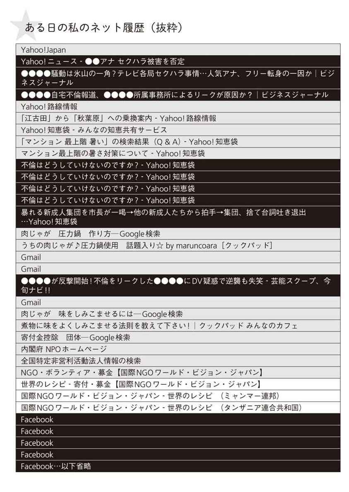

| 節ネット、はじめました。 「黒ネット」「白ネット」をやっつけて、時間とお金を取り戻す | |
| 石徹白 未亜 | |
| (2014) | |
２０１３年２月。わたしの月収は２万５０００円でした。
それまで10年間、会社員として堅めの仕事をしてきましたが、「わたしって自由を求めるタイプだし」とタカをくくってフリーライターになったのです。しかし、自由形は甘くない世界でした。口約束のひとつひとつを真に受けたウブなわたし（当時33歳）は、月収が２万５０００円になってしまったのです。
貯金を崩して生きる身で、娯楽になど金を使えません。タダでできるフェイスブックを開いたところ、Ａ５ランク（＊）の肉を食っただの、麻布で飲んでいるだの報告が添えられた食いかけの飯の写真と、それらに対する多数の「いいね！」やコメントが踊っていました。
楽器店のショーウインドーに飾られたトランペットを眺めている黒人少年のような状況でした。あの話（＊）では、やさしいおじさんが現れて少年はトランペットを手に入れられたはずですが、練馬区の自宅で一人ネットをしているいい年した女のもとには、やさしいおじさんは一生やってこないでしょう。
自分でなんとかするしかありません。確信してしまったからです。フェイスブックは私を不幸にしていると。そして、そもそもインターネットそのものが、わたしの人生の限りある時間を蝕んでいると。
ネットのすべてが悪いわけではありません。ネットなしでは知り合えなかった人や仕事がたくさんありますし、通販サイト、ネットバンキングなどの便利なサービスは生活には欠かせないものです。
しかし、それらの〝無害〟なネット利用以外に、自分をすさませたり、悲しい気持ちにさせたりする「黒ネット」を、わたしはあまりに見すぎていました。また、悲しい気持ちにはならず、見ていてためになったり楽しかったりするものの、それゆえにドツボにはまりがちな「白ネット」から抜け出せないケースも多々ありました。
あなたはどうでしょうか？ 自分がギャフンとなる情報、あるいはギャフンとなる可能性の高い黒ネットになぜか、あえて、自分からアクセスしていないでしょうか？ また、ウィキペディア（＊）や不動産サイト、アットコスメ（＊）、時代の論客が頭よさそうなことを書いているビジネス系サイトなどの白ネットで、好奇心が止まらずリンクの無間地獄から抜け出せなくなったことはないでしょうか？
この本は、ネット中毒者だった著者が、自分のネット利用のなかから時間を無駄にしている黒ネットと、ついつい見すぎてしまう白ネットは何かを見極め、それらを減らしていく「節ネット」に挑んだ体験をもとにした実用書です。各項目の最後には「楽になるためのドリル」をつけました。素通りせず、ひとつひとつ挑めば、あなたも節ネットできます。
＊Ａ５...牛肉の最高等級。食べたことがないので味の感想は書けない
＊あの話...これの元ネタをネット検索したところ、クレジットカード会社の昔のコマーシャルだった模様。しかしユーチューブで見つかったのは短いバージョンで、少年がトランペットを熱っぽく眺めているシーンのみ、という悲しい終わり方をしていた
＊ウィキペディア...インターネット百科事典。超便利だが、誰でも自由に編集できてしまうため、ここで知ったことをドヤ顔で語る前に必ず裏を取る必要あり
＊アットコスメ...ネットサービスとしては老舗の、化粧品の口コミサイト。女性中心なことと、テーマも「女の生き方」ではなく「コスメのレビュー」であるため、ほとんど荒れていないところが高評価。しかし平和さゆえに、ここが「もうどうにも止まらない」になっている人は多い
「ネット中毒」と聞くと、「成人なのに定職にもつかず、親に暴言を吐きながら薄暗い部屋でコンビニ弁当を食べつつ一日中２ちゃんねる（＊）で小学校の爆破予告を書き込むような内弁慶」といったイメージが強く、自分には関係ないと思う人も多いでしょう。ですが、あなたは一日のうちどれくらいネットを見ているでしょうか？
そもそも、はっきり○分／○時間と言えるでしょうか？ 通勤電車の中で、会社で仕事の息抜きに、昼休みの手持ちぶさたなときに......など、細切れな時間でいつの間にか長時間ネットを見ていないでしょうか？
まずは以下の項目をチェックしてみましょう。
...ネット中毒識別チェックリスト
【日常生活】
□起床と同時にパソコンを起動する
□電車に乗ったと同時にスマートフォンを開く
□添い寝の相手はスマートフォンだ
□なんとなくヤフーのトップページに行ってしまう
□見たらイライラするとわかるタイトルのニュース記事（例：あきれた新成人、今年も大暴れ）をなぜかクリックし、腹を立てながら読んだことがある
□不愉快な内容が多く、腹が立つとわかっていながら定期的に見るサイトがある
□買う予定のまったくない商品やサービスの口コミを見ていることがある
□ふと気づいたとき、「なんでこんなものを見ていたんだろう？」と思うサイトを見ていることがある
□ウィキペディア、アットコスメ、ニュースサイト、不動産サイトなど、見始めたらもうどうにも止まらない無間地獄サイトにいくつか心当たりがある
□犯罪、事件、芸能スキャンダルをテレビで見たときに、詳細情報をネットで調べたことがある
【各種ＳＮＳ（＊）】
□嫌いだったり苦手だったりする人の書き込みをなぜかチェックしてしまい、案の定モヤモヤしたことがある
□書き込んだ後、通知を待てず「いいね！」やコメントの状況をチェックしてしまう。反響が気になり仕事も手につかない
□書き込んだ後、想定より反響が少ないと、あいつらはコメントもせず何をしているのかと友達の書き込みをストーキングしてしまう
□自分の書き込みに「いいね！」やコメント、リツイートなどをしてくれた人に対し、恩義に報いなくてはと強い義務感に駆られる
□機嫌をとっておきたい人や、気に入られたい人のどうでもいい書き込みに対し、９割がた下心の「いいね！」やコメント、リツイートをしたことがある
□共通の友人（Ａさん、Ｂさん）がいる場合、Ａさんがあなたの書き込みにはなんら無反応でも、Ｂさんの書き込みにはレスポンスを頻繁にしている状況を見ると、Ａさんとそこまで親しいわけでもなかったのに狂おしい気持ちになる
□メールや電話を返してくれない人が、ＳＮＳで飯や飲み会などのノーテンキな写真をアップしているのを見て、畳をかきむしりたくなったことがある
□泥酔時や、真夜中の昂ったテンションのときにクサい書き込みをしてしまい、翌朝死にたくなったことがある
□フェイスブックとウェブページやアプリとの連携を知らず、恥ずかしい趣味が露呈したことがある
心当たりはいくつあるでしょうか。当然、あればあるほど危険です。ネットのせいで不幸になっている人は、節ネットをしていきましょう。
最後に、以下３つのうち１つでも当てはまれば、あなたはすでにネット中毒者です。
□ネットのせいで、実際の日常生活でやろうとしていたこと（家事、仕事、趣味まで、あらゆること）ができずに終わった日がよくある
□ネットを見た後、なんでこんなことに時間を使ってしまったのだろうとむなしい気持ちになることがよくある
□ネットを見た後、イライラしたり、悲しくなったり、他人が妬ましかったりと、見る前より不幸になっていることがよくある
＊２ちゃんねる...巨大匿名掲示板サイト。犯行予告がよく書き込まれる
＊ＳＮＳ...social networking service（ソーシャルネットワーキングサービス）の略で、コミュニティを目的としたウェブサービスのこと。フェイスブック、ツイッター、ＬＩＮＥ、ミクシィなど
そもそも、世間の人は１日に何時間くらいネットを見て、ネットで何をしているのでしょうか？
インターネットメディア総合研究所が出している『インターネット白書２０１２』では、ユーザーのインターネット利用動向などを調べるアンケートを行っています。回答者の世代は10代から60代以上まで、職業も会社員、自営、学生、主婦、無職とさまざまです。
ただし、アンケート自体もネット上で行ったものなので、どの世代の人も、ネット上のアンケートに登録し、回答できる程度には操作に慣れている人たちです。日本全国の人を無作為に選んで回答してもらうものよりは、ネットをよく利用する人たちに偏っているという前提を踏まえた上で見ていきましょう。
アンケート結果（次ページのグラフ）を見ると、パソコンでネットをしている人のうち、およそ６人に１人に当たる16・１％もの人が、１日に５時間以上もネットを見ています。また、媒体がパソコンより操作性が低いはずのスマートフォンに変わっても、７％もの人が１日に５時間以上ネットを見ています。睡眠とネットで半日程度になるので、残り半日でそれ以外のこと、たとえば仕事、通勤、飯、風呂、人付き合いなどをこなさねばなりません。ネットをすると一日が早く過ぎるわけです。
会社員の多くが仕事でメールをしますし、地図や電車の時刻を確認したり、ちょっとした調べ物をしたりなど、オフィスライフでネットを見ることは多いでしょう。けれど、職場で５時間以上もネットを使っていたら、職種や業務がネットに直結する一部の人以外は給料泥棒でしょう。ましてや会社員ではない、ネットが仕事の手段ではない学生や主婦が１日５時間以上も見ていたら、相当なものです。
しかし、金はないが暇はある学生がネットにはまるのは、今も昔も変わりありません。
わたしが学生だった２０００年前後は、今では当たり前となったネットの24時間定額接続サービスがまだありませんでした。あったのかもしれませんが、庶民の手に届く金額ではなかったはずです。当時からどっぷりとネットにはまっていたわたしは、夜23時～朝８時には定額つなぎ放題になるプランに加入し、毎晩いそいそと23時を待っては東の空がうっすら明るくなるまで、ほぼ毎日ネットをしていました。
当時はネット黎明期です。フェイスブックもツイッターもＬＩＮＥもミクシィもありません。ブログすら一般化していませんでした。２ちゃんねるはあったようですが、今ほどの知名度はありません。パソコン通信なる懐かしい言葉がまだ残っていて、ごく一部の好事家がＨＴＭＬを駆使してホームページをぽつぽつ作っていたような時代でした。
自分のパソコンを持たない同級生のほうがむしろ多数派で、使いたいときは大学のパソコン室に行くという、大変のどかな時代でした。携帯電話は折りたたみ式がナウいとされて一世を風靡していたころです。
それが、今やパソコンでネットを見る人の６人に１人が、１日５時間以上もネット利用する時代です。わずか十数年で、ずいぶん遠くまで来たものです。
ところで、過去のアンケート結果はどうなのかと２０１１年版を見たところ、そもそも設問が「１週間あたりのメディア別利用時間」でした。この１年で「１週間」が「１日」に変わるほど、ネットの利用時間が増えているのでしょう。気がつけば、ネットは生活シーンに絡みつき、知らず知らずのうちに時間を吸い取っています。
１日５時間以上のネット利用が案外普通になったことの主犯はＳＮＳでしょう。人の書き込みを見たり、何を書き込もうか考えたり、「いいね！」を押したり、コメントを返したりしているうちに、恐ろしいほどの時間が経過する発信型メディア。人はそれらをどのくらい利用しているのでしょうか。
先と同じ『インターネット白書２０１２』のアンケートを見ると（次ページのグラフ）、ミクシィ（＊）を利用している人の半分以上（54・２％）は１日に１回はミクシィを見ており、フェイスブック（＊）を１日に５回以上見る人は15・７％もいます。１日５回と聞くと相当な回数に思えますが、朝起きて、通勤電車の中で、昼休みの手持ちぶさたな時間に、帰宅途中の電車の中で、夜寝る前......これで５回。１回10分としたら、これだけで大体１時間です。
見るだけでなく、投稿数も多いのがツイッター（＊）です。１日に５回以上、投稿する人の割合は、ミクシィではわずか２・３％だったのに対し、ツイッターでは12・９％と急増します。今こうしている間にも世界中で、気が遠くなるほどの数の「○○なう」が放出されているのです。
ここで紹介しているアンケート調査は２０１２年５月に行われたもので、そこから２年以上を経た今では、すでに変わっている点も多くあることでしょう。
この時点では、フェイスブックを利用している人の割合がミクシィやツイッターよりも少なく、１日に１回以上投稿をする人は16・３％となっています。設問に書かれていないため正確なところはわかりませんが、「いいね！」のクリックや他人の投稿へのコメントもひとつの投稿とするなら、この数はもっと多くなる気がします。
ＬＩＮＥ（＊）は、そもそも選択肢にすら入っていませんでした。ネットサービス業界は半年で地図が塗り替わる下剋上の世界です。次の調査では、フェイスブックやＬＩＮＥに関する質問が細かく設定されることでしょう......と期待して最新版の『インターネット白書２０１３‐２０１４』を確認してみたのですが、残念ながらアンケートは実施されていませんでした。
したがって若干古いデータではありますが、それでも、世間の多くの人が、いたってナチュラルに「ネット中毒」である状況が数値でも示されているのです。もし最新の調査をすれば、ここで紹介した利用回数、利用時間の数字が上がることはあっても、下がることはおそらくないでしょう（最近人気のなくなってきたサービスに関しては、そうとも言えないのかもしれませんが）。
参考までに、２０１３年11～12月に実施された総務省の「情報通信メディアの利用時間と情報行動に関する調査」では、利用率１位のＳＮＳはやはりＬＩＮＥでした（２位がグーグルプラス、３位がフェイスブック）。
この調査の年代別のＳＮＳ利用率を見ると、10代は76・３％、20代は91％、30代は80・８％、40代は60・５％で、全体では57・１％。うそだ、低すぎる、絶対もっといるはずだ、と思った人（もちろんわたしも）はネットジャンキーの素質あり、です。
＊ミクシィ...ＳＮＳの元祖的存在。ミクシィ→ツイッター→フェイスブック→ＬＩＮＥと最近になるにつれ、知らない人とのつながりから、すでに知っている人とのつながりへと軸足が移りつつある
＊フェイスブック...実名主義のため大胆なことは言いづらく、社交辞令であふれているかと思いきや、けっこう弾けたことを書いている人もいて、知人の意外な一面を知ることのできるＳＮＳ
＊ツイッター...フェイスブックやＬＩＮＥでは応えきれない匿名性が売りのＳＮＳ（実名でしている人もいる）。会社の同僚には言いにくい趣味性の高いことをしている人たちから絶大な支持を得ている
＊ＬＩＮＥ...「でかい絵文字」を「スタンプ」と言い切ることで、２０１４年現在、ＳＮＳ界でブイブイ言わせている新興勢力
コメディアンで俳優のいかりや長介さんは２００４年に亡くなりました。わたしがこのニュースを知ったのは、当時勤めていた職場のパソコンで見たヤフートップページからでした。わたしは哀悼の意を分かち合いたく、ひっそりと同僚にメールを送りました。
このエピソードから、当時は仕事中に私用でネットを見ることに後ろめたい意識があったことがわかります。しかし今、平日の昼下がりにフェイスブックを見てみると、勤め人のはずの友人たちが仲良くログインしていることも珍しくありません。ネットの、特にＳＮＳの普及でモラルやマナーは緩みつつあります。
以前、某人気サイトが主催したイベントに参加したときのことです。わたしはそこで、初対面の人と話をしているのにスマートフォンをいじりながら相槌を打つ若者Ａと、司会者の真正面でイベント中にスマートフォンをひたすらいじる若者Ｂを見て衝撃を受けました。若者といっても25歳くらいです。司会者は若者Ｂに気づき、一瞬ぎょっとしていました。その様子を見て「やっぱりヘンだよね？」と安心してしまうほど、若者は悪気なく、堂々とスマートフォンを見ていました。
若者が使っていたのはツイッターでした。「イベントなう」的なツイートをしていたのかもしれません。スマートフォンの画面の中に広がる仮想現実に気をとられ、現実の世界で自分が他人にどう見えているかに対しては驚くほど無頓着です。
わたしもいよいよ「今時の若者は......」と嘆くようになったのか、と万感の思いだったのですが、思えば、ここ数年で急速に生活に密着したため歴史が非常に浅く、日々新しいサービスが生まれる日進月歩のネットにおいて、「品よくつきあうネット道」など確立されていません。ですから、人のフリ見て我がフリ直せ、が非常に有効です。
いい年をした大人でも、やらかしているケースは多いものです。
たとえば、わたしもたまにやってしまいますが、レストランで料理の写真をスマートフォンの電子音を響かせて撮る行為。女性で、かつ携帯電話やスマートフォンがある程度普及している世代で、これを一度もやったことのない人は、むしろ少数派でしょう。マジョリティに支持されている、食事時間が１分遅れるお写真の儀式なのです。撮った人の半分はその場でＳＮＳにアップし、その間、料理はどんどん冷めていきます。
これとて、ほめられるような行為ではありません。公私の分別がなっていない点では先ほどの若者と同じです。
お写真の儀式をするのは圧倒的に女性です。一方、女性より男性がやらかしがちなのは「食いスマホ」です。
先日ラーメン店で観察してみたところ、食べている最中の客の半数が、片方の手に箸を持ち、もう片方でスマートフォンを器用にいじっていたことすらありました。ある男性は「食いスマホ」には抵抗があったのか、ラーメンを一口すする、股間に挟んでおいたスマートフォンを見る、ラーメン、スマートフォン......を交互に繰り返していました。果たして、せっかくのラーメンの味はしているのでしょうか。
しかし、ここで「食べながらスマートフォンを見る人って嫌ね」と眉をひそめた人の半分以上は、歩きながらスマートフォンを見る「歩きスマホ」を一度はしたことがあるはずです。混雑した駅を急いでいるとき、自分の前が「歩きスマホ」だったら最悪です。１００メートル歩くのに１・25倍の時間はかかるはずです。
マナーの逸脱は、個人よりもモラルが求められる法人シーンでも見られます。ある企業で仕事をしたとき、ノートパソコンを持ってきてほしいと言われ持参したところ、全員がノートパソコンをいじりながら会議をしていました。全員が議事録をとっているわけでもなければ、パソコン操作を教える講習会でもない、普通の会議です。
この会社は、社外の人と打ち合わせをするときもこのスタイルを崩さず、口調が早すぎると「打つのが追いつかないです（笑）」と言って話すのを止めさせ、カタカタと入力していました。相手のほうが「早口なもので」と恐縮する始末です。全員が、発言者ではなくパソコンの画面を凝視しています。
社外の人に対して、この態度は失礼です。しかし、イベント中に司会者の真正面でスマートフォンをいじる若者同様に、堂々と相手の話を止めて入力する姿に、「クラウド（＊）時代のビジネスシーンはこういうものなの？」「わたしの違和感は、ワープロ普及時に『やっぱり手書きじゃなきゃ』と負け惜しみを言っていたワープロ音痴のおじさんみたいなものなの？」とも思いました。
それでも、自分はこんなことはしたくないと思う感覚を大切にしたいです。この例は極端ですが、仕事中、人が話をしている最中に、断りも悪気もなく携帯電話やスマートフォン、タブレット、パソコンをいじる人は増えつつあります。ネットが崩しゆくマナーに対して頑なになりすぎず、かつ流されず......ネット道は自分との終わりなき戦いです。
楽になるためのドリル
・他人がしていて、違和感を覚えたり、自分ではやりたくないなと思ったりしたネットとの付き合い方を思い出してみましょう。
＊クラウド...データをネットワーク上にのせておくことで、どの端末や場所からでもネットワークを通じてデータにアクセスできる、的な意味
天気予報では晴れのち曇りだったある日、少し遠くにある図書館まで自転車を漕いでいたところで急な大雨に遭いました。見渡す限り住宅街で雨宿りする場所も見つからず、10分後、髪からボタボタと水が垂れるほどずぶ濡れになりながら、ようやく図書館にたどり着いたわたしは、体を拭く前にスマートフォンを取り出し、雨に濡れて操作性の下がった液晶画面に、怒りにまかせて「気象庁 うそつき」と入力していました。
気象庁のホームページに行って雨がいつ止むのか調べるなら解決策の模索ですが、「気象庁 うそつき」で検索をかけたわたしは、ただ同じ経験をした人、天気予報を信じ、ずぶ濡れになった人と触れ合うことで心を慰めたかったのです。
思えば、わたしがネットで検索するときは、「知りたいこと」「調べたいこと」ではなく「分かち合いたいこと」で調べるほうが多いくらいです。共感する人を見つけられることはネットの醍醐味のひとつです。
映画や本に深く感動したとき、ヤフーやグーグルの小窓を通じて顔も知らない同好の士の熱い語りを見つけ、「そうそう！」となる喜びは計り知れません。「昔はピンと来なかった茨木のり子（＊）の詩がよくわかるようになってきた」なんて、日常生活で言おうものなら、「ほほ～、詩をたしなむ知的なアタクシＰＲですか」と反感を買うかもしれない、という自意識が邪魔をします。
共感してくれる人、わかりあえる人に出会える喜びが、わたしをネットに駆り立てる要因ですが、はまりすぎると危険です。「◎◎ おいしい（面白い／楽しい）」で検索するならまだいいものの、「●● まずい（つまらない／何が面白いのかわからない／終わった／痛い）」などのネガティブ系の共感は、最初の数分は溜飲が下がって楽しいのですが、ほどほどにしたいところです。
決して優等生ぶって言っているわけでなく、ネガティブ系は見ている人の健康を著しく損なうからです。
ネガティブ系は刺激が強いため、自分の嫌いな有名人や作品や団体に関する、本来「うふふ」となる書き込みを見ているときですら、しばらくすると胸はムカムカ、イライラし、呼吸は明らかに浅くなり、体のあちこちの部分が「健康に悪いから、これ以上読んじゃダメー！」とシグナルを出してくるのがわかります。しかし、脳みそだけは刺激を求め、なぜかクリックを続けてしまうのです。
同じ「メディア」と言っても、テレビや新聞・雑誌なら公表されるまでに第三者によるチェックがありますが、ネットの掲示板はダイレクトに意見が書けてしまいます。従来のメディアではなかったことにされてきた人たちの声を届けられるのは素晴らしいところですが、裏を返せば人を傷つけるもの、悲しい気持ちにさせるもの、わざと腹を立たせようとするものがむき出し状態で転がっているのもネットの世界です。
最近ではニュースサイトでも、記事の下の部分に、そのニュースに対する「みんなの感想（＊）」なんてものが掲載されることが多くなりました。
しかし、それを見たところで、「なるほど、それは新しいものの見方だ！」と膝を打つような思いをすることなどまずありません。たいていは「感動した」とか、悲しいニュースなら「かわいそう」「国には早急な対応をしてほしい」のような、いわゆる「春は桜の季節です」的な、そりゃそうなんだけど、あえて公的な場に書くほどのことだろうか、というものが９割。
そして残りの１割は、一体何を食べて育てばそんなに〝上から目線〟の発言ができるのか、と目を疑いたくなるようなものです。だから、「みんなの感想」を見たところで心無い発言に腹が立つだけだと最初からわかっているのに、なぜかそれを確認するため律儀にスクロールし、「やっぱりイライラしたぞ、ムキー！」となる......。
こうした「イライラの答え合わせ」は、「ネットあるある」としてわたしも心当たりが山ほどありますし、わりと賛同者も得られます。イライラする、という娯楽もあるとは思いますが、あのときの、何かに踊らされている感覚は幸せな状態だとは思えません。
なまじ刺激が強いだけあって手が伸びてしまうネガティブ情報ですが、これらを見つつも自分の性格を穏やかに、和やかに保つなど到底無理な話です。「ネガティブ情報は相手にせずスルー」がネット利用の基本中の基本だとよく言われますが、スルーしたところで目には触れているのです。
したがって、ネガティブ情報のありそうなところにはそもそも行かない「スルー以前」を推奨します。土俵に上がらなければ、それだけで不戦勝なのです（「スルー以前」の具体的な方法は第２章で紹介します）。
＊茨木のり子...詩人（１９２６～２００６）。国語の教科書で「わたしが一番きれいだったとき」や「自分の感受性くらい」を読んだ人も多いはず
＊みんなの感想...最近ではテレビのニュースでもツイッターのコメントを載せるところも増えている。つぶやく人はテレビを確実に見るだろう、と製作者サイドに釣られている状態とも言える
読むだけで人の心をすさませるネガティブ情報ですが、もし自分が書き込んだら、心と体は一体どうなってしまうのでしょうか。
過去にわたしは、悪に手を染めかけたことがあります。飲食店で失礼な対応をされた日の次の晩でした。怒り冷めやらぬわたしは、食べログ（＊）でその店がケチョンケチョンにされているところを見てウサを晴らそうと思ったものの、どうしたものか、こんなときに限って案外高評価で、怒りにさらなる火がつきました。
日ごろはどの店も海原雄山（＊）並みにクソミソにけなすくせに、この店には５つ星をつけやがって、さては関係者の仕込みか？ 天誅だ！ などと思い、捨てアド（＊）を取得して食べログの登録をしました。
しかし食べログは、最後に電話番号の登録を呼びかけてきました。なくても書き込みはできるようですが、今後は電話番号を登録している真っ当なユーザーの書き込みを優先する方針だとの記載があります。これからわたしがしようとしているような、あくどい発言に対する抑止効果のほか、関係者が一人何役も演じ分けて多重投稿するのを避けるためもあるでしょう。
飛び込み自殺抑止のためにホームに鏡を置いている駅があります。電車に飛び込もうとする前に鏡を見て、自分の姿にハッとする......ネガティブ情報に加担しそうなときは鏡を見るといいかもしれません。確実にいい顔はしていないはずです。電話番号も鏡の役割を果たしました。わたしは公人としての己の顔を思い出したのです。
こんなことを書き込んでいることが親兄弟や友達や仕事関連の人に知られたら恥ずかしい！ 小心さからでしたが、悪の道に踏み込む寸前で引き返すことができたのです。
見るだけでも精神が灰色にすさんでくるネガティブ情報。書き込もうものなら、その効果は絶大です。「読んでいるだけ」と「書き込む」には天と地ほどの差があります。書き込みは自己表現のはじまり。誰かに見てほしくなります。誰が見てくれたか確認したくなります。「もっと見て！」とサービスしたくなります。ライバルを見つけ張り合いたくなります。これらのエネルギーが自分の人生を豊かにするために使われるなら素敵なことですが、匿名でする飲食店の悪口では、いつか必ず終わりが訪れる人生の無駄遣いです。
また、ネガティブ発言は一見知的に見えてしまうので、知性への憧れやコンプレックスが強い人は足をとられないよう注意が必要です。「○○っていいよね」（ポジティブ）と素直に肯定するよりも、「○○がよかったのは３年前までだな」（ネガティブ）と軽く否定してみせたほうが、物事をより深く捉えているかのように見えてしまうのが曲者なのです。
要するに、否定はキモチイイのです。長いものに巻かれない、とんがった自分に酔うことができます。でもそれは、傾斜30度の坂道をスキーで滑るようなもので、疾走感が気持ちいいものの、技術がないとスピードにどんどん足をとられていき、止まれなくなっていずれ転倒します。
アマゾン（＊）で、２００冊以上の本をレビューしながら平均評価は１・２星（満点は５つ星）という、かなり辛口なレビュアーがいました。ほとんどが１つ星で、２つ星ですら稀、３つ星以上は片手で足りるほどです。なんでそんな満足のいかないことに時間を割くのかとも思うのですが、きっと誰かをくさしているのが楽しいのでしょう。
というのも、その人の辛口レビュー、面白いのです。わたしが読んだことのある本も槍玉にあがっていたのですが、大局を押さえつつも「こんな内容で４刷とは信じられない」と奥付（＊）までもチェックするフットワークの軽さに舌を巻きました。
そこで、この人はどう褒めるのだろうかと思い、数少ない３つ星以上のレビューを見たのですが、「ためになった」「役に立つ」「面白い」と一気に漠然とした感想に留まり、明らかに筆の勢いが落ちています。揚げ足を取っているときのイキイキとした輝きがありません。
具体的に、かつ社交辞令っぽくなく、白々しくならずに褒めることの難しさを思いました。また、他人の揚げ足を取ったり、批判を重ねれば重ねるほど、自分が何かをするとき己の揚げ足もバッチリと見えてしまい、自意識が邪魔をして何もできなくなる危険性も見逃せません。
情けは人のためならず。人の揚げ足をなぎ払ったと思ったチョップは、ブーメランのようにいつか自分に返ってくるのです。
楽になるためのドリル
・何かにムカついたとき、匿名でネットに告発したことはありますか？
・そのとき、どんな反響がありましたか？
＊食べログ...飲食店のレビューサイト。無料でもたいていのものは見られるが、プレミアム会員（月額３００円＋税）になるとスマートフォンからのランキング閲覧や割引クーポンなどが利用でき、会員数は２０１４年６月で40万人を超える。年３６００円払っても外食でハズしたくない、という情熱の高さに驚く
＊海原雄山...かいばら・ゆうざん。１００巻を超える長寿グルメ漫画『美味しんぼ』の主人公・山岡士郎の父。味にやたらうるさい。初期は鬼のようなヒールぶりでカッコよかったが、孫ができて近年は日和っている
＊捨てアド...普段本命として使っているメールアドレスじゃないメアド。自分の電話番号やほかのメールアドレスなどの素性を明かさず、無料でアドレスを取得できてしまう。出会い系など、犯罪系の業者も活用
＊アマゾン...総合ショッピングサイト。購入者のレビュー（感想）が見られるだけでなく、レビューが役に立ったかをさらに判定する、レビューのレビューもある
＊奥付...本の最後にある、版元名や著者名や何刷か、などが記されている箇所。
わたしの場合、自分の心身の健康を損ねているネットサービスは何かと考えたとき、真っ先に思い浮かんだのがフェイスブックでした。
２ちゃんねる、発言小町（＊）、ヤフー知恵袋（＊）、食べログ、価格コム（＊）、アマゾンなどでよく見かける「何様発言」をしている人は、しょせん顔の見えない誰かでしかありません。それに、ネットで過激な発言をしている段階で、実生活ではうだつがあがらず、鬱憤を匿名の空間で晴らしている心の貧しい人なのだろうと、イライラしつつもどこかゆがんだ優越感も覚えるので心情的には相殺されます。
一方、フェイスブックは友達同士で「リア充（＊）」を競いあう、壮絶なるシノギの削りあいです。
わたしとて、つながりを持つほどの付き合いのある友人が幸福な生活を送っていること自体は「よかったね」と思える度量はあります。
ですが、高級レストランでおいしいものを食べたの、仕事がこんなにうまくいったの、愉快な友達が大勢いて毎週末大騒ぎなの、わたしの子供ってこんなに可愛いの、幸せな結婚生活を送っているの......これらは本来、面と向かって話すには高度なテクニックが要求される、上級かつデリケートな話題、要するに「自慢」です。
フェイスブックでは、「内輪に送るものだから」と、「特定のひとりに送るものではないから」という、よく考えれば相反する２つの大義名分と闘争心によって、こうした話題に対するタガが外れすぎています。
フェイスブックのシノギの削りあいは書き込みの内容にとどまらず、コメントや「いいね！」にも及びます。わたしも、青山のレストランに行ったときは写真つきで報告するなど、いじましく自慢をしてきました。しかし、それに一件もコメントがつかないどころか「いいね！」すら押されないことがあり、自分の人望や人気のなさが数値として出たことに衝撃を受けました。
しかもブログと違い、フェイスブックでは他の友達が「いいね！」やコメントをたくさんもらっている状況も目の当たりにするため、言い訳すら許されません。ましてや、共通の友人Ａさん・Ｂさんがいて、Ａさんはわたしの投稿には「いいね！」すらしないのに、Ｂさんの食いかけの飯の写真にはいつも熱いコメントを残しているなど、友人間の順位が露骨にわかってしまう切なさは、じわじわと骨身に染みました。
さびしくて人とつながりたいからフェイスブックをしているのに、かえってさびしくなっているのです。
この現状に対して取りうる対策は以下の３つです。
①自分もアフター５に友人と飲んだり、休日は行楽したりして、それを逐一フェイスブックに投稿する（終わりなきデスマッチに参戦する）
②人は人、自分は自分と大人になる（価値観の転換）
③いっそ、フェイスブックを見ない（行動の転換）
楽なのは③です。価値観の転換など、それができれば誰も苦労しません。
わたしのそれまでのフェイスブックの使い方は、自分にとって適正なものではありませんでした。「友達の近況をこまめに把握し、自分の近況もこまめに報告する」よりも、友人関係で優先したいのは「せっかく縁あって仲良くなった人に対して、不要な嫉妬心を抱くことなく、いい関係を継続していく」ことでした（フェイスブックを見ないための具体的な方法は第２章で紹介します）。
楽になるためのドリル
・フェイスブックの自分の投稿にコメントはおろか「いいね！」すらほとんど押されず、叫びたい気持ちになったことはありませんか？
・ＳＮＳをすることで、かえってさびしくなったことはありませんか？
＊発言小町...読売新聞のニュースサイト内の女性向け情報サイト「大手小町」にある投稿コーナー。投稿者の質問に対し閲覧者達が回答していく形で進む。嫁姑系など家庭トラブル系に強み
＊ヤフー知恵袋...エクセルの操作方法から人生の重要な問題まで、トラブルに直面したときにここを検索すれば、ほぼ確実に誰かがすでに相談している
＊価格コム...家電を中心としたレビューサイト。登録サイトの中から底値がわかる
＊リア充...ネット上の仮想現実でなく、実際の生活、リアルライフが充実している人のこと。彼氏彼女持ち、結婚している人を指すケースが多いが、何をもってして生活や人生が充実しているとみなすかはそんな単純な話でないことは、この言葉を使っている人も含め全員が知っている
アメリカ生まれのわりに、人情を逆手に取って訴えかけてくるフェイスブック。その代表的な機能が「いいね！（＊）」です。このような経験はないでしょうか。
①自分の書き込みによく「いいね！」をしてくれる人に対して、義理で「いいね！返し」をした
②実力者や人気者、好かれたいと思っている人に対して、「便宜を図ってくださいね」というスケベ心から「いいね！」をした
このようなつながりから得られるものもあるはずです。しかし、自分自身を省みると、義理やスケベ心からせっせと「いいね！」をしている状態を「いい！」とは思えません。
これは個々の価値観の問題であって、正解はありません。あなた自身と「いいね！」の適切な関係を模索してみましょう。
フェイスブックには、自分が作ったフェイスブックページ（＊）に「いいね！」をしてもらうようリクエストする機能もあります。「いいね！返し」ですら抵抗感のあるわたしが、頼まれて「いいね！」をするなど高すぎるハードルです。しかし、ここでリクエストに応じないと今後二人の関係は変わってしまうのだろうか......と臆病風に吹かれ、結局「いいね！」をしていました。
そして、人付き合いで「いいね！」をしてしまったと、いつまでもモヤモヤするのです。
考えた末、きっぱりやめることにしました。プロフィールに「思うところがあり、いいね！リクエストには応じません」と記載しました。わざわざプロフィールページを読むなんて、よほどのファンでない限りいないでしょうから、今後もリクエストは来るでしょうけれど。
しかし、わたしは人付き合いが命綱の個人事業主です。義理人情をもっと汲み取ったほうが生きやすいことが見えてきたら、あっさりと方針転換するかもしれません。ですが、現時点ではストレスが一番少ないこの方法を採用しています。
楽になるためのドリル
・義理から「いいね！返し」をしたことがありますか？
・スケベ心から「いいね！」をしたことはありますか？ その効果はありましたか？
＊いいね！...フェイスブックの投稿に対して、文字どおり「いいね！」（英語で「Ｌｉｋｅ！」）と思ったときに押す、親指を立てたアイコンでおなじみのボタン。義理なのか何も考えていないのか、あるいは「読みました」の代わりなのか、風邪をひいたなどの全然良くない話題にも押している人をたまに見かける
＊フェイスブックページ...通常アカウントとは別の、ホームページのようなもの。企業、団体だけでなく、個人でも作ることができる
フェイスブックで「いいね！」やコメントを多くもらえる人の特徴は何なのか。わたしの全友達の過去の書き込みを調べてみました。食いかけの飯の写真ですらコメントを20以上ももらう人は、一体何が違うのでしょうか。
まず、友達数が多いからと言って必ずしも「いいね！」数を伸ばすとは限りません。友達の数は30人程度から１０００を超える人までいましたが、友達の多さと「いいね！」の多さは関係ない、と言ってもいいくらいでした。友達の数が群を抜いて多い人は、仕事柄よく名刺交換をする人、フェイスブックが仕事の手段にもなっている人とも言えるでしょう。
投稿頻度と「いいね！」数も、それほどリンクしません。人気のある人は、月に１回程度の書き込みであっても、ちゃんと〝ファン〟がその貴重な書き込みを目ざとく見つけ、多くの「いいね！」を獲得します。
人生って不平等だなと思いながら調査した結果、「いいね！」を多数獲得する人には共通の特徴が見られました。キーワードは「血中ホステス濃度」です。
ホステスと言っても、「美人で、どこか陰があって、日ごろは何事もなく振る舞っているけれど、ふとしたタイミングで過去の傷が見え、それが男の庇護欲と独占欲をそそり......」ではありません。「一緒にいる人が気持ちいい／楽しい／この場にいられることがステータスだと思えるような素敵な場を作り、それを維持し続ける」ことがホステス（ホスト）の仕事です。クールな頭脳とタフなハートと、何より、それを継続する体力が求められます。
ではここで、あなたの血中ホステス濃度を測定してみましょう。
【「血中ホステス濃度」測定テスト】
□複数の性・年代からモテている実績がある（例：同世代の同性からの人気が高い、おじさま／おばさまキラー、後輩に頼られる、先輩に可愛がられる）
□苦手な人とも、必要以上に立ち入らせずにうまく付き合える
□聞き上手だ
□ウケ狙いはしないほうだ
□人の名前や顔を覚えるのが得意
□イライラした姿はあまり人には見せないようにしている
□どんな場にいようと、いつの間にか集団内の上位層にいる。もしくは常に上位にいることを狙い、それを実現することができる。しかも、その野心を巧妙に隠すことができる
□自分の意見を間接的に表現するのがうまい
□我慢強いし、我慢強い俺ってすげえ、をアピールしない
□調整業務ができる
□実力者から安定して好かれる
□人付き合いが苦じゃない
□チームプレーができる
□滅多なことでは腹を見せない
わたしもそうですが、どれひとつあてはまらないという人は、血中ホステス濃度が低く、フェイスブックで人気を取るのが徒労に終わるタイプです。アカウントを解除するか、続けるなら省エネ運用でいきましょう。反対にチェックが多かった人は、ホステス能力が高く、フェイスブックの適性大です。
日記やアルバムの延長感覚でフェイスブックを利用しているから、「いいね！」やコメントは、あったら嬉しいけれど、なくたっていちいち落ちこまない──というように、いい距離感を保って付き合えている人もいることでしょう。
でも、そんなふうに割り切れない、「いいね！」の数ひとつに一喜一憂しちゃう野心家の（だけど血中ホステス濃度の低い）方に向け、次節では「いいね！必勝法」を紹介します。
なお、本当は野心家なのに、「別に日記みたいなものだし、『いいね！』なんて別にいらないしぃ～」とうそぶいたポーズを取るのは一番いけません。残念ながら、斜に構えたポーズは一瞬で、確実に伝わります。それは「『いいね！』が欲しいよぅ！ 欲しいよぅ！」と素直にアピールするよりも数倍恥ずかしく、見ている人もいたたまれないので、ぜひこの機会に改めましょう。
それでは「いいね！必勝法」です。
...①血中ホステス濃度の高い人のふるまいを見習う
前項で紹介した血中ホステス濃度の測定テストには、「ウケ狙いはしないほうだ」という項目が入っています。ウケ狙いは自我が強すぎます。血中ホステス濃度の高い人は自我の出し方が総じて控えめで、相手にスポットライトを当ててくれます。こうしたことができる人は、フェイスブックでもリアルでも、人生の８割は勝つことができるでしょう。血中ホステス濃度の高い人は、つまり「大人ないい人」です。そんな人、わたしだって好きに決まっています。
血中ホステス濃度の高い人は、基本的に主義・意見系の書き込みもしません。ウケ狙いといっしょで自我が強すぎますし、異論反論を生む可能性もあります。地雷は避けるのが一流ホステスのふるまいです。だから、「今日のデザートはスイカ、夏を先取りした食卓」や「おやつにから揚げ串。また太っちゃう（汗）」など、書き込みの中身などなくていいのです。
面白いかどうかは、反響とは全く関係ありません。頭をこねくり回した面白いもの、ためになるものでみんなを笑わせたり、うならせたりしてやろうという試みは、ツイッターならいいものの、フェイスブックだと無駄な力みでしかありません。
...②写真は必須。顔出しＮＧなんてとんでもない
ウェブの記事は視覚的なものです。必ず写真とともに掲載しましょう。たまに、心霊写真のように暗かったり、ぼやけた写真を載せている人もいますが、とんでもないことです。携帯カメラで綺麗に写真を撮る方法など、ネット検索すればすぐに見つかります。
また写真は、食べたものや風景だけでなく、自分の顔が写っているものにしましょう。選挙ポスター並みのとびっきりの笑顔をキメてください。仏頂面の写真を載せたところで、読者も反応に困ります。
「いいね！」獲得のためには、お客様（読者）至上主義になることです。羞恥心やプライバシーが最優先なら顔を出さなくてもかまいませんが、最も優先するのが「いいね！」の獲得なら、読者の立場になりましょう。「あ、この人、顔を出したくないんだろうな」と一発でわかるような写真と、満面の笑顔の写真。どちらに「いいね！」が集まるかは、あえて書くまでもないことです。
ちなみに、顔出しは必須なものの、自分で自分を撮影する「自撮り」は避けましょう。フェイスブックはナルシストではなくリア充のためのメディアです。人から言われてつい撮ったんだよね、という風情を出したいところです。撮ってくれる同行者がいないなら、通りすがりの人にでも頼みましょう。
...③時間がある人はマメさでも勝負したい
先ほど、投稿頻度と「いいね！」の数は必ずしも関係ないと書きましたが、それでも効果的な高頻度投稿は支持を得ます。
高頻度といっても、「腹減った」とか「会社行きたくない」とか書いているだけではだめで、特定のテーマを継続させることがポイントです。おやつを食べたときは必ずアップ、外食でカレーを食べるときは必ずアップなど、「このときはほぼアップ」というパターンを作るのが理想です。「おやつの人」「カレーの人」とキャラ立ちしましょう。普段は買った弁当で済ませ、気合いを入れて料理したときだけ写真を載せる程度では話になりません。
...④おめでたいことしか投稿しない
マメさにはちょっと自信がないという人は、おめでたい内容だけを投稿しましょう。フェイスブックでは内容の面白さは全く重視されませんが、内容のおめでたさは重視されます。
わたしの友達の書き込みを見ても、最も「いいね！」数が多かったのは「赤ちゃん誕生」と「結婚しました」「円満退職」でした。「いいね！」をめったに押さないわたしも「おめでとう！ がんばってね！」の思いで下心なしに、あの指のアイコンをクリックしたのです。
「昼飯にこれ食った」では、よほどの人気者（か、もしくは権限のある人）でなければ「いいね！」を獲得できません。誰が見てもおめでたいと思うことを投稿しましょう。そのためには、おめでたいことが起きるよう行動する必要があります。面白いことは頭の中だけでも考えられますが、おめでたいことは行動しなければ作れません。おめでたいことに向けて目標を定め、努力し、行動するその姿は、まさに「リア充」です。
こうしたことがすべて面倒だというなら、フェイスブックの土俵に上がらないほうが幸せです。情報は自分で選べます。引け目を感じるような情報を自ら選んで不幸になってはいけません。
なお、友達の書き込みを一気に調べると、誰が誰の〝ファン〟なのかが残酷なまでにわかるので、みなさんも一度、相関図を作ってみると楽しいかと思います。
楽になるためのドリル
・血中ホステス濃度のテストをしましょう。
・血中ホステス濃度の高い知り合いを思い浮かべてみましょう。
・あなたの血中ホステス濃度が低かったとします。それでもフェイスブックで人気を獲りたいでしょうか。獲りたいなら、それに必要な顔出し、マメさ、おめでたいことをするためのガッツは備わっているでしょうか？
フェイスブックに書き込んでいる人を「会社員」「経営者・個人事業主」「その他（主婦、学生、無職等）」に分けた場合、特に自慢にためらいがないのが「経営者・個人事業主」で、次のような書き込みが目立ちます。
・自分はこんな仕事をした
・今日も忙しくて忙しくて困っちゃう
・自分ってどうもすごいと思っていたが、やっぱりすごかった
・こんな仕事をいつかしたいし、近い将来できると確信している
・人生は思い通りにいっている
わたしも個人事業主なので書く側の気持ちもわかりますが、へこんでいるときには見たくない書き込みです。
会社員の仕事に関する書き込みはせいぜい「今仕事終わった」「疲れた」くらいです。会社員が仕事の詳細をフェイスブックに書くことは、コンプライアンス上の問題もあるのでしょう。一方、個人事業主や経営者は、やりたい放題です。
しかし、個人事業主・経営者のこのような書き込みは、自慢しているだけでは決してありません。むしろ営業・広報の意味合いが強いです。「こんな仕事した」──その心は「絶好調で何か持っているわたしのサービスを買ってね（もしくは、別の仕事があったら振ってね）」です。
対象読者がそもそも「個人事業主に仕事を振ることのできる人」か「顧客」なのです。それ以外の人がうっかり見てしまったら、犬に嚙まれたとでも思ってください、としか言えません。
しかし、毎月一定の給料が振り込まれるわけではない個人事業主は、アグレッシブにならざるを得ません。景気の悪いそぶりなんて見せてはいけません。突っ張ることが、個人事業主のたった一つの勲章なのです。
知り合いの個人事業主や経営者がフェイスブックでやたらと羽振りのいいことを書いていて、面食らったり、妬ましく思ったり、へこんだりしたときは、「これは営業なんだ」「この人たちは日本語が達者なアメリカ人なんだ」と自分に言い聞かせましょう。個人事業主に限らず、自慢好きの友人の書き込みで血圧が上がったときにもお勧めです。
わたしは節ネットをするにあたり、フェイスブックはやめようと当初は決意していたものの、やはり営業活動はしておいたほうがいいのではないかと思い直し、今では仕事で何かしたときだけ書き込むようにしています。かつて散々おびえた他人への威嚇射撃を、いま自分がしています。仕方ありません。突っ張ることが個人事業主のたった一つの勲章だからです。
楽になるためのドリル
・友達のフェイスブックの投稿にムカッとしたときのことを思い出し、どこにイライラしたのか、かみ締めてみましょう。
・よくよく考えれば嫌いな人の投稿を律儀に見て、血圧を上げていないでしょうか？ ＳＮＳだけでなくブログ、ホームページすべてで、そのような傾向がないか振り返りましょう。
思えば昔からネット中毒者だったわたしは、ネットの時間を減らすために、さまざまなことをやってはいたのです。
・目覚まし時計やキッチンタイマーをセットする
・ペアレンタルコントロールを利用する
・ルーターやモデムの電源を消す
・特定の曜日はネットをやらないよう心がける
しかし、この程度で自制できればネット中毒になどなりません。見ているものがどうでもよかったり、腹立たしかったりするほど、なぜか見てしまうのがネットの魔力です。
ある日わたしは、ヤフー知恵袋だったか、価格コムのＱ＆Ａコーナーだったか、その手のサイトを見ていました。内容は「携帯電話を買おうと思っているのでお勧めを教えてください」といったもの。別にわたしは携帯を買う気などないのです。おそらく、ほかの相談を何気なく見ているうちに、リンクをたどっていってしまったのでしょう。
ひとくちに携帯電話といっても、個々のニーズや好みがあります。こんな質問では漠然としすぎていて答えようがありません。質問者のあまりの頭の使わなさに軽くイラッとしたら思う壺、ネット用語で言う「釣れた」状態です。
本当にイラッとしたなら、そこで画面右上の×（画面を閉じるボタン）をクリックしてパソコンもシャットダウンし、街へ飛び出してもっと生産的なことをすればいいのです。
しかし、なぜか最後まで見届けたくなるのがネットの魔力。各種掲示板や悩み相談サイト、読者投稿サイト、ニュースサイトなどで「不倫の何がいけないんですか？」「あきれた新成人、今年も大暴れ」等の記事をクリックしているときも同じです。さては、わたしはマゾなのでしょうか。
この、自分の脳みそを１ミリたりとも動かそうとしない質問者に対し、なぜか丁寧に回答している優しいのか暇なのかよくわからない人も、ネットには大勢います。その回答に対し、不遜な質問者は「それは私の欲しい情報ではないので、この回答は評価しません。ちゃんと質問文を読んでください」と、実際に面と向かったら決して言えないようなとんでもないことを言うのです。
やっぱり腹が立った、むかつく......と思っていると鳴り響く目覚まし時計。なんと、こんなくだらないものを見ている間に１時間が過ぎてしまったのです。
「いい加減に目を覚ませよ！」と目覚まし時計は鳴り響くものの、一度〝不快中毒〟になってしまうと、どうにも止まりません。というより、一度不快になったからには堕ちるところまで堕ちてやるといった、やぶれかぶれな気持ちになってしまうのです。破滅願望でもあるのでしょうか。
目覚まし時計を止め、引き続き不愉快な質問群を読み進み、今夜も人生が無駄遣いされていきます。
目覚まし時計が効かなかったので、パソコンに入っているウイルスソフトの「ペアレンタルコントロール」を利用したこともあります。本来は名前のとおり、親が子供のサイト閲覧を制限する機能ですが、これを使って自分に制限をかけてみたのです。
しかし、これも無意味でした。目覚まし時計と同じで、自分で制限がかけられるだけに、簡単に解除できてしまうからです。
自分で解除できる方法に頼ると、誘惑の前には勝てません。「特定の曜日はネットを見ない」宣言に至っては、自律の心が相当強い人でなければ無理です。第一、そんなちゃんとしたことができる人は、そもそもネット中毒になどならないでしょう。
それでは、ベテランネット中毒者であるわたしは、一体どうすればカタギに戻れるのか──こう考えたときに、「そもそも、わたしはネット中毒者だと自覚はあるものの、何を、どのくらい見ているかは、さほどわかっていない」ことに気づきました。うっすらと危機感だけはあるのですが、具体的な問題点をつかめていないのです。
ダイエットも節約もそうですが、何かを減らそうと思ったときに最初にすべきことは、的確な現状把握です。体重計にも乗らず、一日に何を食べたか、何の運動をしたかの記録すらせずに、スナック菓子をボリボリ食べながら「48キロになりたいナ」とのたまう子は、一生48キロにはなれません。
わたしの「ネットの見すぎをなんとかしたいナ」も、48キロ女子の気合いと大差なかったのです。順番が間違っていました。現状把握を抜きに、いきなり小手先のテクニックに頼ったから失敗したのです。
本腰を入れ、自分のネットの利用実態を解析することにしました。
楽になるためのドリル
・ネットの見すぎを防ぐために何かやってみたことはありますか？ 効果はありましたか？
わたしはネットで一体何を見ているのか。どうしてダラダラと見てしまうのか。どのくらいダラダラしてしまっているのか──答えはすべて閲覧履歴の中にありました。わたしの場合、ネット利用の大半は自宅パソコンからです。したがって、ブラウザ（＊）（グーグルクロームを利用）の閲覧履歴をチェックすれば、ネット閲覧のすべてが明らかになります。
クロームの履歴では、閲覧したサイト名と時刻が表示されますが、まずはサイト名だけを追いかけました。というのも、わたしは自宅仕事で、パソコンは一日中つけっぱなし、ネットもつなぎっぱなしなので、そのうちネットを閲覧していた時間は実質のところよくわからないからです。履歴の次の項目まで50分空いていたとしても、その間ずっとネットを見ていたとは限りません。仕事の合間にちょこっと息抜き、程度のネット利用が往々にしてあるのです。
というわけで、基本的には「何を」見ていたのかだけを調べることにしました。まずは１週間、前日の履歴内容をチェックしてみたところ、一日平均３２１ものページを見ていることがわかりました。１ページに費やした時間を１分とすると、計５時間21分です。
しかしわたしは、ウィキペディアや２ちゃんねるまとめサイト（＊）など、スクロールバーが縮こまってしまうような長い読み物サイトが好きです。１ページ１分は甘い見積もりでしょう。倍の２分だとしたら、もう10時間超です。これだけ見ておきながら、一日のネット閲覧時間は３時間程度だと言い切るには、１ページを30秒程度で見ないといけません。相当な速読です。
ただ、わたしはＧメール（グーグルのメールサービス）を使っているので、受信トレイの画面に戻ったりするたびに、履歴はひとつずつ増えます。また仕事の調べ物もするので、履歴のすべてが遊びで見たものでは決してありませんが、だいぶ遊びで見てもいました。１ページには１５０件の履歴が表示されますが、ひどい日は何回ページを先に進めてもなかなか一日分が終わらず、「昨日のわたし、いつまで気団談（＊）と真エネ（＊）（ともに家庭トラブルサイト）を見ているんだろう」と暗い気持ちになってきます。
それでも、履歴を見たのは発見でした。「たぶん昨日は、あのサイトとあのサイトを３時間くらい見たはず」と記憶や感覚に頼っていては、自分のヤバさに気づけなかったことでしょう。体重計に乗らずに「わたしの体重はたぶん49・８キロだと思う」と言うようなものです。
実は調査初日の閲覧数は、平均を大きく超えた５５４ページでした。初日の惨状から２日目以降は自制心がかかって、平均３２１ページに落ち着いたのです。
ほとんどのブラウザで閲覧履歴を見ることができるはずです。たいてい「お気に入り（ブックマーク）」の近くにあることが多いので、みなさんもぜひ一度チェックして、その内容に驚いてみてください。ダイエットを目指す女子が体重計に乗るようなもので、気持ちのいい情報ではないはずですが、すべてはここから始まるのです。
楽になるためのドリル
・自分のネット履歴をパソコン、スマートフォンで見て驚きましょう。
・１ページあたりの所要時間が１分、もしくは２分と仮定した場合、一日何時間ネットを見ているでしょうか？
＊ブラウザ...ネットを見るためのソフトのこと。グーグルクローム、インターネットエクスプローラー（ＩＥ）、サファリ、ファイヤーフォックスなど。機能や速度に差があり、人によって好みが分かれる
＊２ちゃんねるまとめサイト...２ちゃんねる掲示板の発言のうち、心無いものや野次（多い）をカットしたサイト。読みやすく、面白く、節ネット的にはマズい
＊気団談...きだんだん。２ちゃんねる「既婚男性板」のまとめサイトのひとつ。主力コンテンツは家庭崩壊で、妻から寝耳に水の三行半をつきつけられあわてふためく夫の相談が手に汗握る著者の愛読サイト
＊真エネ...２ちゃんねる「家庭板」内人気スレッド「真のエネミーは義実家ではなく配偶者」の愛称。舅や姑、小姑からのパワハラに耐えていた嫁が、真の敵は日和見的で、親の顔色を窺う伝書鳩以下の夫だった！と気づくまでのドキュメント
履歴をチェックしたことで、最初はその数に驚いたのですが、慣れてくると、見ているもののヤバさにも濃淡があることがわかってきました。
仕事も洗濯も掃除もしないで何でこんなどうでもいい（もしくは不快な）サイトを見ているんだろう......と昨日の自分にうんざりするものから、ちょっと見すぎだけど、これはためになるし、あれは好きなんだもん、とどこか自分を許しているものまで。そのほか仕事でのネット利用や、クックパッド（＊）で冷蔵庫にあるものだけでおかずを作ろうとしたり、ヤフー路線情報で電車の時刻を検索したり、仕事や生活で必要な情報検索もしていました。
やみくもにすべてのネット閲覧を制限しても、長続きしないのは目に見えています。自分が見ているものを分類して、節ネットの優先度をつける仕分けを行いました。分類にあたってのキーワードは「後悔」です。
①黒ネット......見たことに対する後悔が大きいもの（優先度高）
②白ネット......ためになったり面白かったりで後悔はないもの（優先度低）
③無害......仕事や生活で必要なもの（節ネット対象外）
見たことを後悔したり、見ていて心がざわついたり、見る前よりもわたしは不幸になっていると感じる「黒ネット」は、最優先で節ネットすべき対象です。一方、ためになったり楽しかったりと、見ても後悔がないのが「白ネット」で、優先度は黒ネットよりも低くしました。そして、仕事や生活のために必要なネット利用は「無害」とし、節ネット対象外としました。
悩ましかったのが、白黒混ざっているケースです。わたしの気団談と真エネのまとめサイトなどが、まさにそうです。手に汗握る愛読サイトですが、翌日、「わたし、昨日もまた人んちの家庭崩壊を見るのに半日を費やしたのか......」と遠い目にもなるサイトでもあります。こういったサイトはひとまず黒ネットとしておき、明らかに黒いものがある程度片付いたら着手することにしました。
こうして分類したものが左ページの表です（黒＝黒ネット、白＝白ネット、グレー＝無害）。わたしは履歴数が多かったためエクセルで表にしましたが、とりあえず何を見たかがわかればいいので、面倒な人は履歴画面を印刷し、マーカーで色分けするだけでもいいと思います。いずれにしても、黒、白、無害がひと目でわかるようにするのがポイントです。
さて、この表の無害（グレー）の履歴だけをつなげると、「ヤフー路線情報で電車の時刻を調べ、マンションの暑さ対策を調べ、肉じゃがを作り、メールをチェックし、肉じゃがのじゃがいもに味が早くしみこむ方法がないかを調べ、寄附金控除ができる団体を調べ、再びメールをチェックし、最後に詰め替え用のトナーを買った」ことがわかります。

このように、無害履歴をつなげれば、日記よりも雄弁に生活を語ります。
同じように黒ネットの履歴をつなげてみると、この日のわたしは以下のようにして時間を無駄にしたことが明らかになりました。
リンクにつられ、とりたてて興味があるわけでもない芸能スキャンダルニュースを見たあと、そのサイトのリンクにあった別の不倫スキャンダルを見る
↓
不倫つながりでヤフー知恵袋の釣り発言にまんまと釣られたあと、無軌道な新成人の不愉快なニュースに腹を立て、また芸能スキャンダルをなぜか見る
↓
フェイスブックから通知が来ていたのでフェイスブックを見たものの、別にわたしあてのメッセージなど心ときめくものではなく、誰かがどっかに「いいね！」した程度の遠い通知が来ただけで、しょんぼりしながら眺める
↓
夜は気団談で家庭トラブルめぐり。もう夜中だし、そろそろやめないと、でももう１ケースだけ......とまた別の家庭崩壊のケースを見て、ダメだ、もういい加減寝なくては......と思っているのに、今度は真エネのまとめサイトへ移動
無害をつなげたときには微塵も感じなかった、「わたし、これじゃダメなのに......でも、どうにも止まらない......」という、揺れる思いと快楽に堕ちていく過程が伝わってきます。
これとは別の日の黒ネット履歴では、「２ちゃんねるで、ツイッターをやめた人が今ツイッターをしている人の悪口を言う的な掲示板を見つけて閲覧し、最初の数分は、そうそう、ツイッターってそういう『大丈夫？』とか『そんなことないよ』のフォロー待ちの〝構ってちゃん〟がいて鬱陶しいよね、とニコニコうなずいていたものの、あまりの罵詈雑言の連続に、この人たちだって、もともとツイッターをしていたはずなのに、なんでそこまで今ツイッターをしている人を虫ケラのように馬鹿にできるのか、自分の過去に対して恥じらいがないのか」と、だんだんイライラしてきた過程までもありありと思い出せました。
こういう人（わたし）に「イライラするくらいなら最初から見なければいいじゃない」と言うのは、飢えるパリの民衆に「パンがなければケーキを食べればいいじゃない（＊）」と言うようなもので、無意味です。
しかし、このように黒ネットだけをつなげてかみ締めることは、「このままじゃいけない」と奮起するにはうってつけでした。基本的にはサイト名だけをチェックしていますが、履歴には閲覧時刻も表示されているので、「夜中の２時に一体わたしは何を見ているのか」という脱力感も、自分を節ネットへと向かわせる動力となったのです。
これに対して白ネットの履歴をつなげてみると、「リンクにつられて世界の国々の料理を紹介するサイトを見て『へえ～』と思う。偏頭痛がしてきたので偏頭痛サイトを調べ、『へえ～』と思う。その後、子猫たちの愛くるしい姿に癒され、よく行く漫画サイトで漫画を堪能」しています。
黒ネットを見ていたときのようなダメっぷりはなく、「へえ～」と感心したり、好きなサイトを楽しんでいたりと、健康的かつ建設的なネット利用です。軽度であれば問題はないでしょう。
ただ、これにも程度というものがあります。たとえば、ある別の日のネット履歴をつなげてみると、次のような流れができていました。
某ロックバンドの名曲をユーチューブで聴き感動する
↓
某ロックバンドをウィキペディアで調べ、読む
↓
バンドのボーカルに関する記事へのリンクがウィキペディア内に貼られていたのでクリックしてしまう
↓
ボーカルが同性愛者だったことを知る。記事の末尾に「ゲイの人物」なるページへのリンクがあり、そんなカテゴリがあるのかとついクリックしてしまう
↓
「ゲイの人物」一覧に某映画評論家の名前を見つけ、ついリンクをクリックしてしまう
↓
某映画評論家のウィキペディアをフムフムと読む
一連の作業の所要時間は30分。「あれ？ なんでわたし、某映画評論家のウィキペディアを読んでいるんだろう？」と、そこでようやく我に返ったのです。黒ネットのような後悔はなく、よく言えば知的好奇心を満たす旅ですが、ネットの樹海にどっぷりはまり込んでしまっている迷子状態とも言えます。
黒ネット的なものを見ているのであれば、「いつまでも市民社会の一員としてこんなことに時間を費やしていてはいけない」「このままではだめだ」と一応、自制の気持ちが芽生えるものの、白ネットは知的好奇心という大義名分によって、この判断がゆるくなるという黒ネットにはないヤバさがあります。今、この瞬間にもウィキペディアやニュースサイト、不動産物件サイト、アットコスメで遭難している人が、全国で１万人くらいはいるはずです。
これはこれで問題なのですが、黒ネットを見たときのうんざりするほどの後悔はないので、手入れはまず黒ネットから。白ネットはそこそこならいいよね、と後回しにすることにしました。
...スマートフォンのネット履歴の確認方法
わたしは自宅仕事なのでネット閲覧はパソコン中心ですが、最近ではスマートフォンでのネット利用のほうが多い、という人もいるでしょう。
もちろん、スマートフォンのブラウザでも閲覧履歴を確認できますが、そのままでは印刷やコピー＆ペーストなどの加工ができません。履歴の数が少なければ一覧を眺める程度のチェックで十分ですが、スマートフォンでのネット利用が多く、そこに問題意識をもっているなら、しっかりとチェックしたいところです。
スマートフォンでのネット閲覧履歴を印刷・加工したい場合は、親が子供の携帯利用を監視するサービスを活用しましょう。わたしは「ノートンファミリー」を使いました。ほかにも「子供 スマートフォン ウェブ 監視」でネット検索すれば、有償・無償たくさんのソフトやサービスが見つかります。
ノートンファミリーでは、監視対象のスマートフォンに専用アプリをダウンロードして「子供」として設定したら、あとは普段どおり利用します。その後、パソコンからノートンファミリーのサイトに行き、「親」としてログインして管理画面に入れば、「子供」のネット閲覧履歴を確認することができます。
履歴を印刷やコピー＆ペーストすることもできる点は便利なのですが、ノートンファミリーの場合、閲覧したサイトがアドレス表記になる点がやや難点です。たとえばヤフー路線情報を見た場合、グーグルクロームの履歴では「乗換案内、時刻表、運行情報‐Ｙａｈｏｏ！路線情報」とわかりやすく表示されますが、ノートンファミリーだと「transit.loco.yahoo.co.jp」になるのです。多少わかりにくいものの、大体の推測はできますので、スマートフォン愛用者はぜひ活用してみてください。
また、ノートンファミリーはペアレンタルコントロール用のサービスなので、アダルトやギャンブルなど、親が子供に見てほしくないジャンルには、初期設定で閲覧制限がかかっています。大人は必要に応じて解除しましょう。
楽になるためのドリル
・一日分のネット閲覧履歴を印刷するかエクセル等に打ち出し、形に残しましょう。
・ネット閲覧履歴を「黒ネット」「白ネット」「無害」に分け、問題別に色分けしましょう。
＊クックパッド...レシピ投稿サイト。芸能人が料理を作ってブログに上げると、目ざとい読者からクックパッドのレシピだ！とヤジが飛ぶことがある
＊「パンがなければケーキを食べればいいじゃない」...フランス国王ルイ16世の王妃マリー・アントワネットの言葉とされるも、本人はそんなこと言っていない節もある
このようにして20日間、わたしは毎日、前日のネット閲覧履歴をチェックしました。毎日続けると、かすかな進化や新たな問題点が見えてきて張り合いもありますが、さすがに手間なので途中からは目視だけにしたり、休日の朝にまとめてチェックしたりと、無理のない範囲で続けていきました。
その一方で、毎日したことは「節ネット日記」です。節ネットに関する記録を、ふだん使っている手帳の片隅に残しました。
これは、失敗を糾弾して落ち込むためではなく、節ネットの弾みをつけるためです。「つい見てしまうあのサイトを見ず、浮いた時間で冷蔵庫の掃除ができた」など、いいことだけを書きました。
さらに「自褒め」も始めました。フェイスブックなど各種ＳＮＳにはまる理由は、とどのつまり承認欲求です。社会的、経済的地位や人徳に恵まれているかのように見える人が食べログの書き込みにどっぷりはまっているのを見ると、承認欲求の業の深さを思い知らされます。
「そんなに承認が欲しいのならくれてやる！」というわけで、自分で自分を承認することにしました。「ハンカチとポケットティッシュを明日使うバッグに入れてから寝た自分、いいね！」と日記にしたためました。
シノギの削りあいのフェイスブックでは、書いたところでよほどの人気者でなければ素通りされるであろうささやかなファインプレーを、まずは自分で大切に。案外効きます。
【節ネット日記に書くこと】
・節ネットのためにした工夫や我慢
・節ネットで浮いた時間でできたこと
・自褒め（ＳＮＳで承認欲求中毒になっている人向け）
【節ネット日記に書いてはいけないこと】
・失敗→自己嫌悪
わたしはもともと紙の手帳を利用していますが、スマートフォンやパソコンでスケジュール管理をしている人は、日記用の薄いメモ帳を購入するか、または自宅や職場のカレンダーの片隅でもいいので、手書きで日記をつけるようにするといいと思います。
というのも、パソコンやスマートフォンで日記をつけていると、あわせてネットをしたくなるからです。ここはぜひ、通信機能のないアナログツールを活用しましょう。書き味のいいペンを選ぶなど、文具にこだわってみてもいいですね。こういった地味な行動の積み重ねが、ネット中毒から自分の時間を取り戻す唯一の方法です。
楽になるためのドリル
・節ネット日記をつけていきましょう。
・承認欲求中毒な人は、自褒めもはじめましょう。
いよいよ具体的な節ネットにとりかかります。優先度の最も高い「黒ネット（見たことを後悔するもの）」から手を付けていきますが、その中でも「単純に根性で我慢するもの」よりも簡単な、「機能のカスタマイズができるもの」から着手することにしました。
わたしの場合、まさにこれがフェイスブックでした。そもそもフェイスブックでのシノギの削り合いに疲れて節ネットを思い立ったわけですが、じゃあアカウントを解除して完全撤退するかとなると、そうするには惜しい使える機能もたくさんあるのです。
【フェイスブックの長所】
・自分の仕事の宣伝がタダでできる
・グループ機能は便利（特定のグループ内でのみ閲覧できる掲示板のような機能）
・友達の近況がわかる
・メッセージ機能を使えば、メールよりも気楽にやりとりができる
・書き込みに反響があると、やっぱりうれしい
一方、わたしはこんな問題も抱えています。
【フェイスブックの欠点】
・人は人、自分は自分、と完全には割り切れない
・友達の投稿よりも自分の投稿への「いいね！」やコメントが少ないのがわかってモヤモヤする
・地球上でわたしだけ不幸なのかもしれない、と不安になる
・縁あって仲良くなった友達に対し、不要な嫉妬心を抱きかねない
フェイスブックをやめることなく、これらの問題を解決するには......と考えたとき、「友達の投稿をふだん見られなくすればいいのだ」とひらめいたのです。友達から削除するのではなく、友達の投稿が自分のニュースフィード（フェイスブックを開いたときに最初に出てくるページ）に出てこないようにするのです。
フェイスブックで友達のページを開くと、カバー写真の下のほうに「フォロー中」と出てきます。これは「その人の投稿をニュースフィードに表示させます」ということ。ここをクリックしてフォローを外せば（表示が「フォローする」に変わります）、その人の投稿は今後一切、自分のニュースフィードに出てこなくなります。でも友達のままなので、その人のページに行けば投稿は見られます。また、フォローを外したことを相手に知られることはありません。
今のところ「すべての友達のフォローを外す」という一括オプションはないようなので、友達ひとりひとりに対していちいち設定しなくてはいけませんが、友達リストのページから外していくと比較的簡単です。
また、企業や団体、著名人など、「いいね！」を押してファンになっているフェイスブックページについても、「いいね！」したままでフォローを外すことができます。このようなページは宣伝目的の投稿が大半なので、必ずといっていいほどリンクがついているのです。あとで詳しく述べますが、リンクは節ネットの大敵。見ないに越したことはありません。
自分のニュースフィードにどの情報を表示させるか、細かく設定できるカスタマイズ性の高さがフェイスブックにはあるので、これを活用しない手はありません。閲覧だけでなく投稿においても、友達を「同級生」や「同僚」などでリスト分けしておけば、投稿ごとに公開する範囲を変えることもできます。気の置けない友人との「うぇ～い」的なやりとりは職場の上司には見せるべきものでもないので、必要に応じて取り入れたいものです。
わたしは、すべての友達のフォローを外し、「いいね！」していたフェイスブックページのフォローも外し、過去に自分や友達が「いいね！」した投稿なども、すべて非表示にしました。
友達の投稿を見なければ、友達のリア充ぶりを見て被害妄想に縛られることもなく、自分の投稿に対するコメントや「いいね！」の数が友達と比べて少ないと落ち込むこともありません。また、友達の投稿に「いいね！」しなくてはと義務感に駆られることもありません。何より、他人の投稿を見なければ、自分も書き込もうとあまり思わなくなります。他人のリア充報告を見ているうちに張り合いたくなっていたのでしょう。
今わたしがフェイスブックを利用するのは、「自分の仕事の宣伝」と「メッセージが来たとき」が基本で、あとは「○○さん元気かな」と思い立って見に行くくらいです。この方法だと一人の軌跡しか追わないので、「みんなの上に降り注いでいる幸せが、なぜかわたしの頭上だけ足早に通り過ぎてゆく......」と狂おしい気持ちになることもありません。
「○○さん元気かな、と思い立って見に行く」と「みんなの情報が表示される」は情報へのスタンスが正反対です。受身ではなく、選択しているのだと思うと、深い満足感を得られました。
わたしのような「いきなり全員フォロー外し」は大胆すぎると思った方は、どのくらいフェイスブックを節ネットしたいかによって、フォローを外す具合を調整してもよいかと思います。
フェイスブックを見る時間を半減させたいなら、表示される記事を半分にするのが近道でしょう。フォローを外すよりも難易度の低い、各投稿だけを「非表示」にする機能もあります。「うわっ、この書き込みモヤモヤする！」と思ったらまずは非表示にし、その後また「うわっ、この人の書き込みまたしてもモヤモヤする！」「どうもこの人、モヤモヤする！」と思ったら、イエローカード累積２枚で退場（フォローを外す）とするサバイバル制度もいいかもしれません。
ただ、「フェイスブックこそ自分にとっての黒ネットだ」という自覚がある人は、知り合い程度の人であろうと竹馬の友であろうと、まずは一律で全員のフォローを外すことをお勧めします。数日たって「こんな生活、もう耐えられない！」と思ったら、「この人だけは見たい」「見ないほうがストレスになる」と切実に思う友達だけフォローを戻してみましょう。
人間関係の間隔をある程度、調整できるのは大人の特権です。フェイスブックごときに邪魔されたくありません。フォローを外しても、友達の投稿はそれぞれのページに行けばいつでも見ることができるので、たとえばＡさんに会う予定の日は、直前に電車の中でＡさんのページだけをチェックし、会ったらすかさず「伊豆に行かれたんですね。お天気でよかったですね」と話を合わせることもできます。社交の場で話すネタに困っている方は、フェイスブックを活用しない手はありません。
フェイスブック創始者、マーク・ザッカーバーグ氏の思うフェイスブックのいいところは、クールであることだそうです。あなたの利用状況はクールでしょうか？ 他人と自分を比べてネチネチ、じめじめしていないでしょうか？ リア充アピールや承認欲求を満たしてほしくてギラギラしすぎていないでしょうか？
それで楽しいのであれば問題ありませんが、疲れた、イライラする、モヤモヤする、どうも幸せではない......と思うことがあったら「節フェイスブック」しましょう。わたしはこれでずいぶん楽になれました。
楽になるためのドリル
・フェイスブックを節ネットしたい人は友達全員のフォローを外しましょう。
・いきなり全員は......という場合は、どのくらい今よりフェイスブックを節ネットしたいか考え、それに応じて減らしてみるか、サバイバル制度を導入しましょう。
それまでモヤモヤしつつも毎日見ていたフェイスブックですが、このようなカスタマイズをして以降、すっかり見なくなりました。節フェイスブックに大成功してしまったのです。
ここでわたしは、この成功体験をいやらしいほどかみ締めました。数の減ったネット閲覧履歴をわざわざエクセルに残したり、それを印刷してほくそ笑んだり、もちろん節ネット日記にも「フェイスブックを全然見なくなった」としたためました。
禁酒の場合、一口ビールを飲んだ瞬間に失敗です。一方、節ネットは「禁止」でなく「節制」です。やりやすくはあるものの、ぬるくなってしまう危険性もあります。そのため、成功体験は何度でも手柄としてかみ締めました。「成功体験＝自分すごい、気持ちいい」が節ネットの原動力です。
たとえ翌日にはフェイスブックを見てしまったとしても、「ドンマイ、ドンマイ」程度の反省にとどめました。「だからわたしはダメなんだ。だいたい、わたしの人生は意志の弱さから失敗ばかりで、生まれてきたのがそもそも間違いだった......」という過剰な自分いじめは暗くなり、やる気を失うだけです。
失敗は省みないが成功はしつこくかみ締める──節ネットは自分だけのことなので図々しく堂々といきました。
フェイスブックの成功から、「機能のカスタマイズで対応する」と「受身で情報を見ていることから、自分で選んでいく姿勢に切り替える」を他でも実践していくことにしました。次なるターゲットは「寄り道」です。ネットで一度も寄り道をしたことがない人など、そうはいないはずです。
寄り道とは何か。わたしのネット閲覧履歴（第２章「閲覧履歴を仕分けする」参照）の一部をご覧ください。
①ヤフー路線情報に行くためにヤフートップページへ
②ニュースの欄に並んでいた女子アナにまつわるセクハラ問題の記事に心惹かれる
③クリックしてしまう
④その記事の下に今度はタレントの不倫スキャンダル続報記事へのリンクがあり、心惹かれる
⑤クリックしてしまう
これが寄り道です。ヤフートップページを素通りできなかったのです。
このような経験は誰しも覚えがあるのではないでしょうか。インターネットの世界を表す「ウェブ（ｗｅｂ）」という言葉は、そもそも「蜘蛛の巣」という意味です。リンクが蜘蛛の巣のように張り巡らされているところが、本や雑誌、テレビとも異なるネットの特徴です。本来知りたかったこと以外の情報も入手できることは、２０００年頃は、それまでのメディアにはなかった利点として捉えられていました。
しかし、ネット中毒者にしてみれば、この横の広がりこそが危険です。酒やタバコなら、一缶吞み終えてしまった、一箱吸ってしまったなどの区切りがありますが、ネットは区切りがあいまいです。記事の下のリンクをクリック、クリックを繰り返し、いつの間にか２時間が過ぎ、「そもそもなんでこんなサイトを見ているんだろう？」と首をかしげた経験が、わたしには何度もあります。
ヤフートップページなど、毎日のべ１００万人は寄り道させているはずです。ある日のヤフートップページのリンク数を数えたところ、１８４もありました。そして、数えている最中にまんまと「私がお産をしていた時に、家でオンラインゲームをしていた夫」的なヤフー知恵袋のリンクに心惹かれ、ついクリックしてしまったのです。
リンクの誘惑に弱い人は、そもそもヤフートップページに行ってはいけません。夕方からの天気、政治・経済、スポーツ、芸能スキャンダル、家庭トラブルまで、ヤフートップページに隙はありません。ダイエット中の人はデパ地下を歩いてはいけませんし、節約中の人はショッピングモールに行ってはいけませんし、禁酒中の人は飲み会に参加してはいけないのと同じです。
節ネットにおける鋼の意志は、「私がお産をしていた時に、家でオンラインゲームをしていた夫」を見てもクリックしないことではなく、自分の見たい心を刺激するようなリンクがてんこ盛りのサイトへは行かないことに発揮せねばなりません。行けば最後、絶対にクリックしたくなります。
ヤフートップページのようなリンクまみれのページに行かないためのカスタマイズとして、まず入り口から封鎖しました。
ブラウザを起動したときに最初に表示されるページを「スタートページ」と言います。パソコンの場合、ヤフーなどの各種ポータルサイトや、契約しているプロバイダのポータルサイトになるケースが多いのですが、これをリンクのまったくない真っ白な状態にし、そもそも寄り道のない状態にします。
ブラウザの設定画面で起動時に開くページを指定できるようになっていますので、そのＵＲＬ欄（通常ここにポータルサイトなどのアドレスが入っています）に「about:blank」と入力する、これだけです。「blank」とは白紙、空白という意味で、文字どおり何も表示されない真っ白なページが立ち上がります。ブラウザによっては、「（起動時に）空白ページを表示」という選択肢が用意されているものもあります。
なおグーグルのトップページは、ヤフートップページなどよりも圧倒的に情報量が少なくまだマシですが、わたしも利用しているクロームだと、前回閲覧したページやよく閲覧するページの一覧がサムネイル（＊）で出てしまう、という厄介なおもてなしがあります。これも「ほほう、どれどれ」になってしまい、お勧めできません。
以前は、まずグーグルやポータルサイトに行かないことには、見たいページを検索できませんでした。しかし、今ではほとんどのブラウザで、アドレスバーに直接検索ワードを入れてエンターキーを押せば検索できます（アドレスバーの横に検索窓がある場合もあり）。こうすれば、魅惑のヤフートップページに立ち寄ることなく、ヤフー路線情報に直接行けるのです。地味ですが、効きました。
スマートフォン（アンドロイドを利用）では「検索ウィジェット（＊）」を使うことにしました。これなら液晶画面の真ん中に検索ワードを入れる「枠」だけが出てくるので、ほかの情報に足をとられません。ｉＰｈｏｎｅの場合は、液晶画面を下にフリック（＊）すれば検索窓が出てくるので、ウィジェット同様、ブラウザを立ち上げることなく検索できます。
＊サムネイル...画像を小さくしたもの。サルネイムといつも混乱する
＊ウィジェット...画面上に常駐する小型アプリのこと。検索窓のほか、天気予報、時計など、機能が視覚化されている
＊フリック...スマホで画面を移すときなどによくやる、指で払うような動作のこと
入り口を封鎖できたので、それ以外にも寄り道、つまりリンクの誘惑にあふれたサービスの利用を、最初から避けることにしました。わたし的に心当たりがありすぎたのは、以下の３つです。
...①ブックマーク
備忘録として保管し、どうしても思い出せないときに見返すことはありますが、ブックマークを基点にネットサーフィンはせず、そもそも基本的に開かないようにしました。
というのも経験上、ブックマークでサイト名の一覧を目にしてしまうと、当初予定していたもの以外も絶対見たくなってしまっていたからです。サイトＡを見たかったはずが、一覧で見てしまうと「そう言えばサイトＢもサイトＣも最近見てなかったな、どれどれ」となる自信が、わたしにはあります。ブックマークは過去の自分が気に入って集めたサイト集でもあるので、ヤフートップページよりも吸引力があります。
サイトを閲覧したいときは検索窓にサイト名を入れ、その都度、検索するようにしました。こうすると、面倒臭さゆえ引き返すチャンスが増えます。あるサイトを検索したとき、該当サイトそのものではなく、そこへのリンクが貼られた別のサイトが表示されたことがありました。そこからお目当てのサイトに行こうとしたのですが、「そうまでして見たかったのだろうか？」と我に返り、見ずに済んだことがあります。
もちろん、この成功体験は節ネット日記に得意気に書き記しました。
...②メールマガジン、ＳＮＳ
メールマガジンも極力解約することにしました。メール内で情報が完結しているものならいいのですが、大抵はおいしいところで「続きはウェブで！ http://...」と誘導してきます。メールマガジンは、ごく一部のものを除いて無料です。どうしてもまた読みたかったら再登録すればいいので、まずはやめてみました。
また、情報サイトやニュースサイトのツイッターやフェイスブックアカウントを購読している人も多いと思いますが、特に１４０文字という字数制限のあるツイッターは、確実にリンクに誘導してきます。
「たくさんある記事が１４０文字でコンパクトにまとめられていて、その中で必要なものだけ選んで見られるからツイッターは便利」という人なら、ツイッターのほうがむしろ節ネットになっていますが「へー、このリンク面白そう→リンク先のウェブサイトに行く→へー、これも面白そう→リンク先のウェブサイトの、さらに別なリンクに心惹かれる→へー（以下、繰り返し）」と誘導されっぱなしな状態になっているのなら、そのアカウントを購読しないのも一案かと思います。
誘導されて行くのではなく、見たいと思ったときに自分から見に行くスタイルに変えるだけで、ネット閲覧時間を大きく減らせます。
...③自分が先ほどまで見ていた別のサイト
パソコンやスマートフォンでネットを見ていて、ふと気がつくと、ブラウザはタブ（＊）まみれになっています。リンクをあちこち開いたり、ひとつのことを調べている最中に別のことを調べたりしていると、タブは飛躍的に増加します。
これまた、「さっきここを見ていたんだな、どれどれ」となってしまう危険をはらんでいますので、極力タブはひとつだけ開くようにしました。音楽配信サイトで曲を聴きながら別画面で歌詞を調べるなど、２つの画面を同時に開く必要のあるシーンもありますが、それ以外は、見終わったら右上の×ボタンでタブを閉じ、その都度、成仏させるよう気をつけました。
ネット閲覧では浮気せず、そのページを見終わったらタブを閉じる──周囲に聞いてみると、できている人にとっては「もともと普通にやっている」ことだったり、なかには「タブが増えるとイライラするのですぐ閉じる」という人もいました。
ズボラなわたしにとっては案外難しく、ついタブが増えてしまうのですが、「気がついたら閉じる」を習慣づけるだけでも、自分が２時間ほど前に見ていた情報を「どれどれ」とまた見てしまう蟻地獄を防げることを実感しました。
寄り道について述べてきましたが、一番危険なのは目的もなしに、なんとなくブラウザを開いて、ヤフーなどのリンク満載のページに行き、そこにあったニュースを何気なく見ていくことで、こうなると、すべてが「目的なき寄り道」です。朝起きて何気なく新聞を開く行為のネット版とも言えますが、枚数に限りのある新聞と違って、ネットは終わりがありません。
目指すは、飼い主がフリスビーを投げたときの犬のイメージです。ただし、自分が飼い主兼犬であり、フリスビーが見たいサイトです。今何をしたいのかを意識して、必要なものだけを見て、終わらせるようにしましょう。
楽になるためのドリル
・「寄り道」をどのくらいしているか、ネット閲覧履歴から調べてみましょう。
・寄り道の起点はどのサイトでしょうか？
・ブラウザのスタートページを真っ白にしたり、スマートフォンでは検索ウィジェットを使うなど、リンクの多いサイトに行かない工夫をしましょう。
・メールマガジンをやめてみましょう。
・ブックマークを見るのをやめてみましょう。
・ニュースサイトや情報サイトのフェイスブック、ツイッターアカウントを削除しましょう。
・見終わった情報の窓を閉じる習慣をはじめましょう。
＊タブ...１つのウィンドウ内で複数の画面を開き、それらを切り替えるときに使う「見出し」部分のこと
ポータルサイトもブックマークを使わず、常に検索窓からだけネットに入るようにしたことで、「そうまでして見なくていいか」と引き返すチャンスが増えました。そこで、他にもネットを見るまでの関門を増やすことにしました。面倒臭く使いにくくする、逆カスタマイズです。
...①ログインが必要なサイトは必ず最後にログアウトする
ＩＤとパスワードを毎回入力する面倒臭さで節ネットを促しました。フェイスブックやツイッターなど、各種ＳＮＳはパスワード制なので、毎回ログアウトします。長いＩＤをちまちまと打っている間に我に返ることができます。
あえて入力しづらいＩＤにしたり、「hituyou?」（必要？）や「setunetto」（節ネット）などをパスワードにして自分を説得させてみるのも手です。
...②スマートフォンのアプリは極力削除する
スマートフォンアプリを提供しているウェブサービスは多数あります。ブラウザからでも見られるのにアプリもあるのは、アプリのほうが速く、快適に閲覧できるからです。この快適さを損なわせるため、アプリは極力削除（アンインストール）しました。見たいときはブラウザで見ます。こうすると遅く、さくさくと進まず、イライラします。この不便さで節ネットを促しました。
楽になるためのドリル
・ログインが必要なサイトは毎回ログアウトしましょう。
・ＩＤやパスワードを説得型に変えましょう。
・スマートフォンのアプリのうち、スマートフォンのブラウザでも見られるものはアンインストールしましょう。
カスタマイズによって順調に節ネットは進み、新たな空き時間が生まれました。無為無益な日々を過ごしていた今までのわたしにさよなら。生まれ変わったわたしがしたことは以下の通りです。
起床。朝のワイドショーで事件や事故、スキャンダルの進捗をくまなく確認
↓
昼のワイドショーを確認。数時間では大抵のことは進捗していない
↓
昼下がりのワイドショーを確認。やはり進捗していない
↓
夕方ニュースを確認。やはり進捗していない
↓
深夜ニュースを見て、進捗していないことを確認し、就寝
こうして数日が過ぎ、節ネットで取り戻した時間で何をするかを決めないと、まずいと気づきました。時間を取り戻したところで暇なら、ネットに逆戻りするか、ネットと同じように金もかからず手軽なテレビにはまるだけです。
テレビはネットと同じでダラダラと見がちで、何よりテレビを見ると、高い確率でネットを見たくなります。ワイドショーで芸能人の不倫、離婚報道を見たあと、芸能レポーターでもないのに詳細情報をチェックしたことが何度あったでしょうか。もともとその人のファンか、あるいはアンチならば、知りたいという切実な理由がありますが、それまで何の思い入れもなかったどころか、ほとんど知らなかった芸能人の不倫スキャンダルを一生懸命に見てしまっているのです。
さらに根深いのが、義憤にかられたときです。どうでもいい不倫スキャンダルなら、しばらくすれば「わたし何やってんだろ」「小腹減ってきた」などに上書きされますが、嫌なニュースを見てスイッチが入ってしまうと厄介です。
「被害者よりも容疑者の人権が守られる法律」「脅かされる日本の国益」「モラル、マナーの低下」「昔はよかった」「最近の若者は」など義憤スイッチは人それぞれですが、テレビを見ることでこれが押されてしまっては最後、ネットフィールドを駆け回ることになります。
テレビと違って情報が残るネットでは、同じことで怒っている人に出会うのも簡単です。被害者の支援活動を行うなど、義憤が建設的な行動につながればいいのですが、ＳＮＳで世相を皮肉ったコメントを残す程度では、世の中は１ミリたりとも変わりませんし、面倒臭い人だと思われるだけです。
義憤のほか、「男ＶＳ女」「既婚ＶＳ未婚」「金持ちＶＳ貧乏」「高学歴ＶＳ学歴なし」などの単純な二項対立もドツボに陥りやすいので、好みの二項対立には近寄らないよう気をつけました。近づいて少しでも見たら最後、絶対クリックしてしまう自信が、わたしにはあります。
それでは、「ネットにうつつを抜かしてあれもこれもできなかった」と思ったときに何ができていたら、わたしの一日はよりよいものになっていたのか。考えた結果、わたしは以下の３つをやることにしました。
①ダンス／ヨガ／ストレッチ
②掃除
③仕事
ここでの理想は、次のＡ～Ｅのうちのどれか、もしくはその組み合わせです。
...Ａ・成果をネットで自慢したくならないもの
下手の横好き、純粋な趣味がお勧めです。
見栄えのいいお弁当を作ったり、会社近くのおいしいランチの店を発掘したり、鈍行電車に乗って近場を旅したりするのも素敵ですが、写真を撮ってブログやＳＮＳに上げたくなる誘惑も強そうです。ネットから離れるためにしたことでネットに戻っては元も子もありません。なまじ自信や自負のある分野だと、自説をブログで語ったり、ライバルとＳＮＳで牽制しあったりしたくなる欲も出てきてしまいます。
ただ、どうしても自慢したかったら自慢してしまいましょう。一番大切なのは、それまでネットに費やして後悔していた時間をリアルライフに費やすことができた、という成功体験です。
しかし下手すぎて、あるいは趣味すぎてネットで公開したいと思わないことだと、よりお勧めです。わたしのダンスがそれです。動画で公開したいなんて微塵も思いません。「昔からちょっと興味はあったんだけど......」という分野に挑戦してみましょう。ちなみにわたしはギターも始める予定です。もちろん初心者です。
...Ｂ・成果がすぐにわかるもの
下手の横好きのように楽しいものがあると張り合いが出ますが、やり遂げた実感がすぐに得られるものもあると、なおいいです。お勧めは家事、特に掃除です。
ネット中毒者で家が汚い人は、掃除を必須で入れましょう。効果は絶大です。非行少年を更生させる施設の様子を見ると、不良たちにひたすら掃除をさせ、部屋は清々しく整理整頓されています。自分の人生に本意ではないことをして、限りある時間を浪費し、かけがえのない自分自身に迷惑をかけている意味で、ネット中毒者は立派な不良です。専門家たちの長年のノウハウから、ワルを更生させるには、まず掃除です。
掃除のいいところは、結果が短時間ですぐに出るところです。物が床に置かれていないフローリング、ぴかぴかになったガスレンジなど、綺麗になった箇所が日々部屋の中に増えていきます。そして、それらがネットの誘惑に勝った勲章になり、自信につながります。個人的に「こんな汚い部屋でダラダラネットして、掃除もせずに......」という心の声がこたえていたので、ネットをしていた時間で掃除する、は一挙両得の解決策でした。
...Ｃ・体を動かすもの
これまで脳みそばかりに求めていた快楽を、「カラダを動かして気持ちいい」に少しずつシフトさせていきました。何より、ネットで血眼になって健康情報を探すよりも、実際に体を動かしたほうが確実に健康になれます。
...Ｄ・そもそもパソコンやスマートフォンを使わないもの
オフラインが理想的です。友達づくりや婚活など、リアルのコミュニケーションを充実させるのもいい取り組みですが、ネットとの親和性が高いので要注意です。婚活サイトで生涯の伴侶を探していたはずが、気づけばとんでもないプロフィールの人を面白半分に探していた、とならないよう気をつけたいところです。
...Ｅ・仕事につながるもの、誰かの役に立つもの
ダラダラネットをして、さらに、そのあと自己嫌悪するくらいならいっそ働いたほうがいいのではないかと思い、より働くことにしました。わたしの場合は自営なので、今までより仕事の営業を積極的にしています。仕事関連の本を読んだり、資格取得を目指したりしてもいいですね。オフィスを出たら会社のことは考えたくない、という人は家族サービスをしてみたり、ボランティア活動をするのもいいですね。
「ネットをダラダラ見ている」から、「自分や、家族、もしくはほかの誰かのためになることをしている」に切り替えれば、「わたし、やるじゃん」と思えます。もちろん、こういうことは得意気に日記にしたためます。
ここに挙げたものすべてに共通することですが、何かを読んだり聞いたりする「インプットの快楽」ではなく、自分で何かをする「アウトプットの快楽」を増やしました。ネットやテレビだけでなく、雑誌や書籍も含め、そもそも「情報を入手する」ということから意識して距離を置く、情報の断捨離です。
「何かを知ってキモチイイ」から「何かをしてキモチイイ」へ。意識して切り替えていきます。
楽になるためのドリル
・あなたの陥りやすい義憤や、二項対立にはどんなものがあるでしょうか？
・あなたはネットをしない時間で何をしたいですか？ 以下を意識しつつ、考えてみましょう。
Ａ・成果をネットで自慢したくならないもの
Ｂ・成果がすぐにわかるもの
Ｃ・体を動かすもの
Ｄ・そもそもパソコンやスマートフォンを使わないもの
Ｅ・仕事につながるもの、誰かの役に立つもの
ここまでは機能のカスタマイズで節ネットを進めてきました。しかし、わたしにはまだ黒ネットがありました。それはインターネットの掲示板で、「不倫の何がいけないんですか」「あきれた新成人、今年も大暴れ」「できちゃった婚で１歳の子持ち。前カノと再会...妻と別れてヨリを取り戻したい」のような、タイトルを見ただけで腹が立つとわかっている情報をなぜかクリックして読んでしまう悪癖、「いやなもの見たさ」です。ネットが広げた罪のひとつです。
しかし、これはカスタマイズできる領域でないので、自分でなんとかするしかありません。ここからは根性論です。難易度は今までより高いです。
...①対象と基準を明確に決める
漠然と「昨日はいいネット閲覧をしていなかった気がする」だけでは対策も取れないため、ＣＴスキャンをする心意気でネット閲覧履歴を見て、対象のサイトと対策を打ち出しました。
・アマゾン、価格コム、食べログ、ユーチューブ→一般利用者の感想部分は読まない
・ヤフー知恵袋→不愉快なタイトルには手を出さない
・２ちゃんねる→見たとしても特定のまとめサイトのみ。不愉快なタイトルには手を出さない
・発言小町→基本的に見ない
ネットでイライラしたときは、対象と基準を決めるチャンスです。イライラする以外にも「悲しくなる」「悔しくなる」「心がざわつく」「モヤモヤする」「張り合いたくなる」など、さまざまなスイッチがあるはずです。余計な情報を見ないためのスイッチを意識し、スイッチが作動したらすぐに二度と見ないための手を打ちましょう。スイッチが作動しているのに何回も見てしまうなどもってのほかです。いやよいやよも好きのうち、を撲滅しましょう。
...②基準に則り、一日やめてみる
①の基準に則って、一日やめるところから始めます。「今日は見ない」と朝に決意します。決意した瞬間が要注意で、むしろ見たくなるのですが耐えましょう。暇な日だと我慢のつらさは倍になるので、最初は忙しい日を選びます。大事なのは「ネットを見なくたって一日は過ぎる」と実感すること。つらいことがあったときなど、余裕のないときの無謀な挑戦は避けるのが無難です。
前項の「代わりにやること」で挙げたことを行い、「イライラするようなものを見ないだけでなく、こんな生産的なことができた」と成果や実感を残すのも効果的です。一日我慢し終えたら、ネット閲覧履歴を見て成功をかみ締め、日記にも残しましょう。一日成功したらストイックにいきすぎず、翌日は自由な意志に任せます。この繰り返しです。
...③見てしまってもめげない
節ネットにおいて、ネットをうっかり見てしまうことよりも問題なのは、自己嫌悪です。根性論の領域は、三歩進んで二歩下がる長期戦。必要以上に自己嫌悪して、一番大切なやる気を失わないようにします。
どうでもいいサイトを見ているうちに２時間が経過し、我に返った瞬間は自己嫌悪から「もう知らない！ 今日はこのままネット尽くしだ！」とダメ人間コースに行きがちですが、そこで皿洗いなどやり遂げたかったことをひとつでも、すぐにやるようにしました。我に返ったら自分はすぐにやめることができる、と体感することは自信につながります。
...④手帳でクールダウン
わたし的に大好物な下世話サイトがどうにもこうにも見たい！ という衝動が湧いてきたら、すぐには見ず、手帳に「ご近所トラブル１１０番！悲劇！新築分譲マンションの隣室が騒音おばさんだった！」などサイトの情報をしたため、クールダウンするようにしました。特に内容がくだらないものの場合、非常に効きます。
手帳を持たない人は付箋でもチラシの裏でもいいので、手書きにこだわりましょう。そのままでは通信することができない、手書きのよさをフル活用します。また、手書きの自分の字を見ると我にも返れます。パソコンばかりしているから字が下手になったな......としみじみしてしまい、衝動が収まってきます。
...⑤慣れ親しんだスタイルで見ない（場所／媒体／時間）
わたしは在宅仕事かつ夜型なので「家で、パソコンから、深夜に」が一番慣れ親しんだネット閲覧スタイルです。パソコンのほうが早く操作できるので、スマートフォンではさほどネットを見ません。
慣れ親しんだスタイルのときほど、どうでもいいサイトを見がちです。というわけで、黒ネットは「家、パソコン、深夜」以外に見ることにしました。「ご近所トラブル１１０番！悲劇！新築分譲マンションの隣室が騒音おばさんだった！」が見たいと思ったら手帳にしたため、翌日仕事で移動するときにスマートフォンで見るものとしてとっておきます。「家、パソコン、深夜」から「移動中、スマートフォン、昼間」というように、場所も媒体も時間も変えます。
いざ「移動中、スマートフォン、昼間」に待望の騒音おばさん記事を見ると、さほど燃えないことが実感できます。サイトそのものが見たかったのではなく、家で深夜にダラダラしているときに現実逃避や気分転換がしたかっただけだ、と実感できるので、かみ締めました。
慣れ親しんだスタイルは生活全般に及びます。わたしの場合、飲酒回数を減らしたところ節ネットにも効きました。酒で失敗し、反省からしばらく飲酒を控えていたところ、黒ネット閲覧も減っていたのです。「飲んだら見るな、見るなら飲むな」というわけです（これは友人の至言です）。
考えてみれば、ダラダラとネットを見ているとき、わたしは泥酔か、ほろ酔いか、はたまた酔いがちょっと醒めてきてさみしい状態のときが多く、実はシラフでは適切にネットができていたのです。とはいえ状況によりけりで、「酒もネットもできないなんて、何を楽しみに生きていけばいいのか」と思うくらいなら無理は禁物です。
そもそも夜型生活も節ネットにはマイナスです。お天道様の下ではあまりダラダラとネットはしづらいので、夜更かしをしないようにしました。これも、「夜型はやめよう」と決意するだけでは、48キロになりたいダイエット女子の気合いと大差ありません。夜の誘惑の前に簡単に屈する自信があるので、食べ物の買い置きをせず、夜起きていれば腹が減るようにし、さらに早朝の習い事を入れるなど、早寝早起きせざるを得ない状況を作りました。
スマートフォンをベッドに持ち込み、寝ころがってネットを見る「寝ット」をしがちな人は、まず立つか座った状態でネットをすることから始めましょう。食べながらネットを見る「食いスマホ」など、何かしながらネットをしがちな人は、「ネットを見るときはネットだけする」を目標にしましょう。ネットだけ真剣に見ても燃えるサイトはそこまでないはずです。
続けるコツは、決意や意志、根性の力だけに頼らず、わたしの夜更かし対策のような「そうせざるを得ない状況」を作ることです。「よし、もう食べながらネットを見ないぞ」の決意だけでは、今まで楽だからしていた習慣はそう簡単に覆りません。職場の自分のデスクのパソコンでネットをしながら昼ごはんを食べてしまう人は、会議室や近くの公園など、パソコンのないスペースで昼ごはんを取るなどの行動に落としましょう。
食事中にスマートフォンをつい見てしまうケースは、パソコンを見ながら食べてしまうケースよりも、持ち歩きがしやすいために難易度は上がります。理想は食事の場にスマートフォンを持ちこまないことですが、それが現実的でない場合は、化粧ポーチやかばんの収納部分など「チャック」のある場所にスマートフォンをしまいましょう。チャックを開かずに食事を終了できたら勝ちです。ただし、負けても自己嫌悪しすぎないようにしましょう。
またスマートフォンは、「電話が来たよ」「メールが来たよ」「ＬＩＮＥからスタンプが来たよ」「フェイスブックからお知らせがあるよ」と音は出すわ、画面に通知マークを出すわ、時に震えるわで、やたらわかりやすく通知してくるのも「つい見ちゃう」一因です。通知設定はある程度カスタマイズが可能なので、電話着信は残すが他は通知のレベルを下げるなど、何が何でも、いついかなるときにも、わかりやすく連絡が来る形にしないのも自衛策として取り入れたいところです。
瘦せたい人は飯を必要以上に食ってはいけないし、ある程度の運動をしないといけません。節ネットしたい人も同じです。決意を実現するためにどういう状況を作ったらいいか考え、試行錯誤していきました。
...⑥黒ネットよりも健康的な手段で自分を安心させてやる
わたしは、自分がなぜ「【確信犯】男だけど女性専用車両に乗ってみた結果ｗｗｗｗ【視線が痛いんだけどｗｗ】」や「騒音おばさん」のような、不愉快な記事にまんまと釣られてしまうのか、その理由を考えてみたとき、「自分より程度の低い人を見て優越感を覚えて安心したい」という思いが根底にあることがわかりました。
品のいい感情とは言えませんが、この「安心したい」というところだけ取り出せば、ＳＮＳに「いやよいやよも好きのうち」ではまっている人にも共通するのではないでしょうか（楽しくＳＮＳを使えている人は問題ありません。でも、承認欲求や自己顕示欲も、結局、自分は大丈夫だと安心したい思いが根底にありそうです）。
わたしが黒ネットにはまってしまうのは、それが楽しいからではなく、本来安心を求めているのに、黒ネットからはなかなか安心が得られないどころか、イライラや自己嫌悪など、かえって不安が増してしまい、それを解消しようとまた黒ネットを見てしまうからなのではないかと気づきました。この堂々巡りでは自分が気の毒です。
そこで、もっと健康的な手段で自分を安心させるため、「黒ネットを見たい」と思ったら「自分は今不安なのだな」と正直にかみ締め、その後「代わりにやること（第２章「ネットの代わりにやることを見つけておく」参照）」をするか、もしくは白ネットを見ることにしました。白ネットの見すぎもよくないのですが、少なくとも見て後悔するような黒ネットと違い、白ネットは好きだから見ているサイトです。不安を慰める手段としては、黒ネットよりは健康的だ、と割り切ることにしました。白ネットの見すぎへの対応策は後述します。
カスタマイズできない黒ネットを閲覧してしまう習慣を断ち切る方法は、それらを見ない新しい習慣にゆっくり上書きすること、それだけです。ここで紹介したテクニックを駆使し、今、黒ネットを１００％見なくなった......とは言い切れませんが、まともにはなってきました。禁酒、禁煙と同じで一発で劇的な効果が得られにくい、地味でつらいところです。
ですが、「前ほどそんなに見たくない」「なんであんなものがあんなに見たかったんだろう？」と思える朝は、あなたにも必ずやってきます。
楽になるためのドリル
・カスタマイズできない黒ネットはどのサイトの、どの部分でしょうか。基準と対策を明確に定めてみましょう。
・サイトを見たいと思ったら、一旦手書きでクールダウンしましょう。
・ダラダラとネットを見がちなときの状況をそれぞれ確認し、具体的な手を、なるべくたくさん打ちましょう。
①いつが多いか？（曜日、時間帯）
②相手はいるか？ それは誰か？（匿名の知らない相手も含める）
③場所はどこか？
④どんな状態のときが多いか？（酔っ払っている、寝ころがっている）
・不安を黒ネットで解消しようとしていないか、自問自答しましょう。
・黒ネットでは不安は解消されないので、ネット以外のことをするか、せめて白ネットにしましょう。
黒ネットをある程度まで制限できてきたので、「白ネットの見すぎ」にも取り組みました。見て後悔する黒ネットと違い、ためになったり、楽しかったりする白ネット。ほどよい利用なら人生の喜びであり、制限する必要はないと今でも思っています。
ただ、白ネットには「ためになる」と「楽しい」の２つがあり、案外クセ者なのが「ためになる」です。第２章「閲覧履歴を仕分けする」に載せたわたしのネット閲覧履歴の場合、白地の部分が「ためになる」です。たとえばＮＧＯホームページ内の「世界のレシピ（ミャンマー／タンザニア）」。寄附金控除の対象になる団体を調べていたはずが、つい脇にあったリンクをクリックしてしまったのでしょう。
また、これらのケースもそうです。
・偏頭痛‐Ｇｅｏｇｌｅ検索
・薬に頼らない片頭痛の和らげ方‐ＮＡＶＥＲまとめ
・片頭痛の病態と誘発因子頭痛の基礎知識片頭痛治療剤マクサルト製品情報エーザイの医療関係者向けサイト
持病の偏頭痛が出て、こめかみをグリグリしながらネット検索したのでしょう。
世界のレシピも偏頭痛も、「ためになりそう」「役に立ちそう」という思いから判断が甘くなっていますが、胸に手を当てて考えれば、ミャンマー料理にしろタンザニア料理にしろ、そのために用意しなくてはならない独特の調味料が多いため十中八九作らないし、偏頭痛もバファリンを飲んで横になる以外の解決策はありません。パソコンの画面を見ていたらますます頭が痛くなるだけです。
「ニュースサイト：学校で大暴れ、給食費滞納...あきれたモンスターペアレンツの言い草！」など下世話でネガティブな情報を見ているときは、こんな下らないものをいつまでも見ていてはいけない、という良識が働きますが、ためになる情報は、それが大義名分になり判断がゆるくなりがちです。「ためになる」はクセ者なのです。ネットには多数の「ためになる」があります。
【「本当にためになったのか、胸に手を当てて考えてみてほしい」サイト】
①ビジネス系サイト......時代の論客や識者の新しい視点や知識に満ちた記事を読み、賢くなった気になる→数時間が過ぎている
②ウィキペディア......新しい発見に夢中になり、リンクをたどりにたどる→数時間が過ぎている
③転職・求人サイト......求人情報を読みあさる→数時間が過ぎ、疲れてきて結局エントリーシートすら出さないまま終わる
④不動産物件サイト......引越しの予定がないのに物件をチェックしている→数時間が過ぎている
⑤健康、美容サイト......健康（ダイエット）情報を、血眼になって調べる→数時間が過ぎ、眼精疲労、腰痛、肩こりを感じて終わる
これら「ためになる」系の情報を読んだところで、実際はブラウザ右上の「×」を押して画面を閉じ床についたら、翌日にはすっかり忘れているのです。
転職サイトや不動産サイトは、いわば「ここではないどこかへ」。旅行の予定もないのにハワイのガイドブックを見る感覚です。暇つぶし、現実逃避にはうってつけの「楽しい」白ネットでもあるのですが、「もしかしたら転職するかも」「もしかしたらここに住むかも」の「もしかしたら」があるゆえに、勢いがついてしまうのです。
そこでわたしは、その場で行動につなげることを意識しました。転職サイトを見たときは必ず１社には履歴書を送る、ビジネス・ライフハック系のサイトを見たときはそのうち１つは実践する、化粧品の口コミサイトを見たときは一番納得した化粧品を購入する。自分の脳内だけで終わらせず、手か足か金を動かす切実な行動や決断に移しました。
黒ネットのウンザリ感はわかりやすい節ネット対象ですが、ためになる白ネットの「知的になった気はするが、画面を閉じたら何も残らない。そして日もたたないうちに、似たようなサイトをまた見ている」は一見悪いことに見えないだけに厄介でした。ただ、さほど中毒性がないため、節制しやすい穴場でもあります。あなたも、役に立っているように見えるだけで、頭の上を通り過ぎていくだけの情報はシャットアウトしましょう。
楽になるためのドリル
・ためになる系のサイトを長時間見ていることはないでしょうか？ また、あなたがはまりやすいためになる系のサイト、ジャンルは何でしょうか？
・ためになる系のサイトを見るときは、脳みそ内で完結させず、手か足か金を動かす行動に落とし込みましょう。
最後に、「楽しい」白ネットを手入れします。これよりもまず先に削るのは、後悔する黒ネットと、削りやすい「ためになる白ネット」であって、楽しい白ネットは日常生活に支障が出てきたら着手する程度にしています。一番難しく、わたし自身、苦戦しているところです。
以下、わたしが愛するサイトとの死闘で編み出した小技です。
...①形を変えて保存し、オフライン上で見る
読み物のサイトは全文をテキストエディタやワードなどにコピー＆ペーストし、パソコン上に保存します。イラストや写真のサイトなら、写真やイラストだけをパソコン上に保存しました。サイトを見たくなったときは、それらのファイルをオフラインで見てお茶を濁します。結局見ていますが、リンクがなくなることで二次災害を防げるので、閲覧時間を大幅に減らせます。
...②慣れ親しんだスタイルで見ない
【中級】で挙げた黒ネットの制限と同じです。違う閲覧スタイルにして今までほど面白いと感じなかったら、そのサイトが好きだったというより、ダラダラしたかっただけでしょう。本当に好きなサイトなら、どこで何を使って閲覧しても面白いはずです。
...③まずは一日我慢する
サイトへの訪問は癖になります。つい毎日行ってしまうような大好きな「日参サイト」は訪問回数を週６にしてみました。翌日になれば無制限で見ていいので、まずは一日だけ我慢します。
我慢をしていると、通常は「今日はあのサイトを見られないのか、見たいなあ」くらいですが、たまにじっとしていられなくなるほどの禁断症状が出てきます。５分くらいで収まるので、ふんばりましょう。乗り越えるとまた「見たいなあ」程度に戻ります。波を乗り越えたと自褒めしましょう。もし波を乗り越えられなくても、チャレンジしたこと自体を褒めます。自己嫌悪する必要はありません。
我慢をやりとげて床につくと、翌朝には太陽も自分を祝福してくれている気分になります。当然、日記に得意げにしたためました。
楽になるためのドリル
・あなたにとっての楽しみの白ネットはどのサイトですか？
・「画像や文章だけの保存」「慣れ親しんだスタイルで見ない」にチャレンジしましょう。
第１章で、１日に５回以上もフェイスブックを見てしまう人が案外いることに触れました。ただ読むだけのサイトよりも、自分が発信できるサイトは吸引力が強いものです。
ネットにはたくさんの「発信者になれるサイト」があります。これらのサービスは少数精鋭に決めました。まずは現状把握です。今どのくらい、そうしたサービスを利用しているかチェックしてみましょう。
【ＳＮＳ、ブログ系】
□ブログ
□フェイスブック
□ツイッター
□ＬＩＮＥ
□ミクシィ
□その他
【商品やサービスのレビューサイト】
□食べログなどのグルメサイト
□楽天市場、アマゾン、価格コムなどのショッピング系サイト
□アットコスメなどの口コミサイト
□その他
【情報交換、語り合い、悩み相談をするサイト】
□ヤフー知恵袋
□発言小町
□２ちゃんねる
□その他
【趣味の作品を投稿するサイト】
知名度が高いのはクックパッド（レシピ投稿サイト）ですが、それ以外の趣味の領域でも多数のサイトがあります。写真、小説、イラストの投稿サイトのほか、ユーチューブにダンス動画を投稿したり、自作の歌をニコニコ動画（＊）に投稿するのもこのケースです。家庭菜園で育てた自慢の野菜を紹介するサイトもありました。
絞る基準はただひとつ、「自分にとってより白ネットなサービスを残す」です。「イライラするが見てしまう」「いやよいやよも好きのうち」は削りました。
使い方にもよりますが、情報の発信者が不特定多数になることから、ＬＩＮＥよりも、フェイスブックやツイッターのほうがやめやすいです。やめたところで知り合いから「最近、全然書いてないみたいだけど元気にしてる？」と胸が熱くなるメッセージがくることなど残念ながらないので、気持ちよく卒業しましょう。
プロフィールに「フェイスブック（ツイッター）をついつい見すぎてしまうので、ちょっと利用を控えることにしました。お返事が遅れたらごめんなさい」と正直に書き込んでおくのも、おめおめ出戻りできなくするハードルを課す意味ではいいかもしれません。
ＬＩＮＥには、自分が登録していることを公開しない機能があります。必要な人とだけつながりを持つ自衛策も取り入れましょう。ＳＮＳで社交的で楽しそうにしている人と自分を比べ、ああいう風に生きられたらわたしの人生も少しはマシになるのだろうかと焦り、身の丈に合わないことをしてもロクなことになりません。人付き合いに関する自分の器を見極め、それ以上のことはしないのが賢明です。
＊ニコニコ動画...動画サイト。ユーチューブとの最大の違いは投稿者のコメントが画面上に流れること
「わたしってこんなにすごいの（『わたしの友達／配偶者／恋人／親兄弟ってこんなにすごいの』もここです）」や「世の中ってバカばっかり」「誰もわたしのことをわかってくれない」「あいつは運と要領がいいだけだ」「世の中に説教したい（要はすべて『わたしってこんなにすごいの』）」といった発言は中毒になりがちで、自分自身を不幸にしますし、周りからもドン引かれるので、やらないに越したことはないですが、どうしてもやりたいなら匿名でブログを開設しましょう。
実名のフェイスブックで行うなどもってのほかですが、迂闊な人をよく見かけます。根強い「世の中に説教したい」ニーズに応え、ニュースサイトでは、記事本文の下に「このニュースへのみんなの声」としてフェイスブックのリンクがつくようになったものも多く見かけるようになりました。そこでワイドショーのコメンテーターよろしく世相を斜め上から斬っているつもりの、全く知らない人の本名＆顔写真つきの発言を見たときの腰のすわりの悪さといったらありません。実名でやることに全くためらいがないとは、匿名で毒づく２ちゃんねらーが貞淑で可憐にさえ見えてきます。
しかし、２ちゃんねるなどの匿名掲示板サイトだと、同じような不満を抱く〝類友〟を見つけやすかったり、逆に、匿名性をフル活用して他人の発言に不条理なまでにかみ付いてくる〝アンチ〟につかまりやすかったりと、うれしさや腹立たしさから増長してしまうことが目に見えているので、これも駄目です。アマゾンや食べログ、ユーチューブなど、多くの人が見るレビューサイトで得意気に「邦楽は俺の中で６年前に死んだ」などと語るのも、見る人の迷惑なので慎みましょう。
自慢や「世の中ってバカばっかり」など、あまり人に聞かせるべきではない意見は、ＳＮＳ時代においてあまり人が来なくなったブログをあえて活用しましょう。ブログなら、見たい人か、うっかり検索ワードがひっかかってしまった人しか来ません。コメント欄は承認制（＊）にすれば「上から発言をさらに上から説教してやる」とやってきた〝上から仲間〟のコメントを公開もせずに抹殺することもできます。
とはいえ、俺すげえ系の話題はそもそもヘルシーではないので、決してお勧めはしません。ただ、ブログ自体はお勧めです。人間である以上、承認欲求はありますのでブログのアクセス数が増えれば嬉しいものですが、ＳＮＳのように他人と自分の「いいね！」数が違うなど、無駄に比較することがないので、のびのびできます。わたしはもともとブログはやっていて、フェイスブック以降ちょっとほったらかしになっていたのですが、古巣に戻って今は気楽にやっています。
先に挙げた中でお勧めは、ヘルシーな「趣味の作品を投稿するサイト」を手厚くすることです。ＳＮＳや語り合いのようにつながりがメインになっているサイトよりも、写真、家庭菜園、今晩のおかずレシピなどの明確なテーマがあって、さらにそれをレビューするのではなく、自分がトマトを作ったり、レシピを考えたりするなど「携わる」関わり方になるサイトです。
消費者や野次馬が集まるサイトは所詮他人事ですので、荒れる可能性が高くなります。生産者、当事者になりましょう。手を動かすアウトプットが増えるので、リア充ライフにも貢献します。
楽になるためのドリル
・今、発信者になれるサービスをどれだけ利用していますか？ そのうち何なら減らせそうですか？
・ＳＮＳは、どこまで情報やプロフィールを公開するかの設定ができるものが多いです。初期設定のままにしている人は、見直して必要に応じて手を打ちましょう。
・上から発言がやめられない人は、世のため人のため自分のためにブログを開設しましょう。できれば、やらないようにしましょう。
＊承認制...フェイスブックやツイッターは事前承認ができず、すぐにコメントが公開されてしまうので否定的な意見や言いがかりを受けた有名人が釈明したり逆ギレしたり、いい人対応をして好感度を上げようとしたりなど、なかなか大変そう。コメントを承認制にもできるブログであえてそれをせず、否定的な意見や上から発言、空気を読まないコメント、コメント欄に書かれただけの単なる自分語りなどをうまくあしらう大人なブロガーを見ると、人付き合いのケーススタディとして参考になる
この章で触れてきた節ネットのやり方をまとめます。本文中はわたし自身の体験を時系列にして書いたため、「空いた時間に何をするか」がやや中間部分に来ていますが、本来はこれを冒頭に持ってきたほうが節ネットへのモチベーションに大きくつながります。
①空いた時間で何をするか、ネットをしていた時間で何ができたかを考える
②自分のネット閲覧履歴を確認して、現状にショックを受ける
③履歴を、後悔の強い「黒ネット（優先度高）」と、楽しい・ためになるなど後悔のない「白ネット（優先度低）」と、生活に必要な「無害（節ネット対象外）」に分類する
④黒ネットのうち「カスタマイズできるもの」から着手する。フェイスブックが黒ネット対象の人はカスタマイズ要素が多いのでお勧め
⑤節ネット中は簡単な日記をつける。毎日自分を褒めちぎりましょう
⑥寄り道を阻止するため、ブラウザの設定変更や、メールマガジンの購読解除などを行う
⑦ログインしたページは毎回ログアウトするなど、ネットに入るときの関門を増やす
⑧「カスタマイズできない黒ネット」は慣れ親しんだスタイル以外で見ると有効。不安は黒ネットでは解消できないと気づきましょう
⑨黒ネットが一通り節制できたら白ネットの節制へ。ダラダラ見がちな「ためになる」系は行動に落とし込むことで対処する
⑩白ネットの「楽しい、面白い」系は一番難しいところ。リンクのない形に保存し、オフラインで閲覧したり、慣れ親しんだスタイルで見ないことで対処する
⑪自分が発信者になるサイトははまりやすいので絞り込む。コミュニティを主眼に置いたサイトよりも、趣味がメインのサイトのほうが荒れにくく、アウトプットを増やせてやりがいもあるのでお勧め
地味な小技の積み重ねが節ネットです。一度の失敗にめげず気長にいきましょう。情報を見せられている、クリックさせられている状態から、見たい情報を自分でその都度選ぶ状態に少しずつシフトしていきましょう。
また、この原稿を書くにあたって周囲の人とネット利用状況について話す機会が増えたのですが、この「ネット利用について人と話す」ことは、とても節ネットに効きます。「みんな同じようなポイントでドツボにはまったり、イライラしているんだ」と励みになったり、「みんながはまってしまうツボかと思いきや、意外とこれに陥っている人は少ないのだ！」と気づかされたり。はたまた、自分ははまっていない沼に首まで漬かっている人に遭遇したり......など発見もあります。
自分自身がネット中毒者のくせに、自分が見ないタイプのネット（たとえばわたしの場合、ネットゲームはまったくしません）にどっぷりはまっている人を見ると、「ネット中毒者だなあ」と自分のことを全力で棚に上げて、どこか冷めた目で見てしまうのです。そして、「わたしも他人から見ればそうなんだ」とハッとします。
アルコールを断ちたい人のための「断酒会」ではコミュニティを作り、アルコールで失敗した体験や、禁酒による効果を言葉で共有しあうのだそうです。ここはひとつ、知人と「節ネット会」をしてみてはいかがでしょう。ただし、自己嫌悪は節ネット最大の敵なので、人選は重要です。あなたのネット利用状況を小バカにしたり、上から説教したりするような、頭ごなしな人は避けましょう。
人がネットをする理由は「タダで手軽にできるし、暇で不安だから」です。ネットを見る手段を手軽じゃなくして、かつ自分自身も暇じゃなくし、不安な状態は健康的な方法で慰めていきましょう。
「タダ」については、一見タダのような気がするだけで、実はこれっぽっちもタダではなく、たいていの人は無駄に通信費を払いすぎています。そこで次章では、節約と節ネットを同時に実現する方法を提案します。通信費を今より安く、それゆえ今より使いにくいネット環境にすることで、節ネットにつなげていきます。
某ＯＬ向け雑誌の節約特集を見ていたときのことです。ペットボトルのお茶は買わずにマイボトルを持参し、週末にせっせとお弁当のおかずを作って冷凍保存し１週間使い倒す、という計画性と健気さで食費を節約しているのに、通信費は月１万超えどころか１万５０００円近い人が４人中３人もいました。
家賃や間取りから見て、おそらく一人暮らしです。毎月１万５０００円かかっている通信費を１万円まで下げられれば、年間６万円の節約です。ペットボトルの飲み物を毎日買えますし、韓国やグアムに旅行もできることでしょう。
なぜ、食費は水も漏らさぬ節約ぶりなのに、通信費はざる状態になってしまうのでしょうか。
それは、今の通信費が「高速＆定額使い放題」で高額のプランが主流なため、何気なく選ぶと、ほぼそういうプランを選択してしまうからです。自宅に光回線を通し、かつ３大携帯電話会社（ＮＴＴドコモ／ＫＤＤＩ／ソフトバンク）のスマートフォンを利用している人は多いですが、これでは１か月の通信費は１万円を超えてしまうことでしょう。
本書でお勧めする通信費節約法は、「高速」か「定額使い放題」のどちらか、もしくは両方をあきらめることです。そして、これは節ネットにも役立ちます。というのも、節ネットに立ちふさがる大いなる壁が、「定額制で使い放題なんだし、高いから使わないと損」のもったいない精神だからです。
冒頭のＯＬたちは月の手取り収入が20万円前後で、通信費が１万～１万５０００円でした。１万５０００円とすると、手取り収入における通信費の割合は７・５％です。この割合は高いのでしょうか？ 総務省の「家計調査」（左ページの表）と比較してみましょう。ちなみにこれは対象が世帯ごとで、収入に対する通信費でなく、支出に対する通信費の割合になります。単位も、月から年に変わります。
デフレや消費控えから消費支出全体は減少傾向です。しかし、消費支出全体に占める電話通信料の割合は、２００６年の３・４９％から２０１２年の３・７７％と微増しています。
ここで、表の「固定電話通信」と「移動電話通信」の違いについて説明します。光回線、ＡＤＳＬ、ケーブルテレビのように、物理的な線が家まで引かれているのが「固定電話通信（以下、固定通信）」です。したがって、固定通信は回線が引かれた建物の中でしか利用できません。
一方、携帯電話やスマートフォンなど、通信機器を物理的に屋外にも移動でき、無線の通信回線が通じるエリア内であれば日本全国どこでも利用できるのが「移動電話通信（以下、移動通信）」です。
さて、表を見ると、固定通信料は年々微減していますが、移動通信料は増加傾向にあります。固定通信料が下がったのは、一人暮らし世帯を中心に固定通信を契約しない人が増えたため、移動通信料が上がったのは、基本使用料が携帯電話よりも高額のスマートフォン利用者が増えたためと考えられます。
さらに、こんな資料もあります。総務省統計局による「家計消費状況調査」には、衣類や家電、医療、そして通信などに毎月いくら支出をしているか、世帯収入別に分けたデータがあります。２０１２年調査における各支出を１人当たりの金額に直したものが左ページの通りです（先ほどの家計調査は年間でしたが、今度は月間の支出額です）。
〈通信・放送受信〉以外の〈家具等〉〈衣類等〉〈歯科診療代〉を見ると、世帯収入が上がるほど増える傾向にあります。年収が２００万未満の世帯と２０００万以上の世帯を比較すると、最も差の小さい〈家具等〉で２・３倍、〈歯科診療代〉が３・３倍、最も差の大きい〈衣類等〉にいたっては８倍近い開きがあります。お金持ちはいい歯を入れるのでしょう。
一方で〈通信・放送受信〉は、それほどの差が出ません。ここには移動電話、固定電話、プロバイダ、ケーブルテレビ、衛星放送の料金が含まれていますが、２００万未満世帯の４６５０円に対して、２０００万以上世帯は６８０１円、もっとも高額を使っている１５００万以上２０００万未満世帯でも７１３５円です。２００万未満世帯との差は１・５倍ほど。10倍近い収入差を考えれば、この差はあってないようなものです。
通信費に「貧富」の差が出にくいのは、今、普通に通信を契約しようとすると「高速で、定額使い放題」ゆえに高いプランを選んでしまう可能性が高く、節約のしようがない（ように見える）ためです。北欧の高級家具は無理だからイケアで安いものを買おう、デパートでは服を買えないからファストファッションを買おう、歯は保険治療内で賄おうといった生活者としての工夫が、通信費においてはやりにくいのが現状です。
ただし、通信は洋服や家具と違い、電気、ガス、水道同様に命にかかわるような緊急時に必要となるインフラでもあります。安さばかりにこだわって、肝心なときにつながらないリスクは考える必要があります。
しかし、少ないながらも通信費にも選択肢は存在しています。低速だけれども低額なプランや、通信量に制限はあるけれど低額なプランは、世の中にすでにいくつもあります（次項以降で詳しく説明します）。
ですが、宣伝費にお金をかけられるのは当然、大手の通信会社です。テレビコマーシャル、郵便受けに入ってくるチラシやダイレクトメール、電話による営業、駅前や大型ショッピングモールの一角のようなテナント料が高いであろう便利な場所で見かける携帯ショップ、大型家電量販店で見かける通信会社のハッピを着た大勢の店員......など、「あなたが通信サービスをおのずと知るきっかけ」に多額の資金を注ぎ込めるのは「巨大資本を持つ会社」です。
選択肢は、そうじゃないところにひっそり存在しています。きのこや山菜を採りに行く感覚で気合いを入れて探し出す必要があるのです。ボーッとしていたら見つけられません。
また固定通信は、住んでいる地域によって会社の顔ぶれが大きく変わってきます。東西ＮＴＴやＫＤＤＩはほぼ全国で事業展開していますが、関西地域のケイ・オプティコム（関西電力系）など地域の電力系列会社、あるいはケーブルテレビ会社が提供しているケースもあります。ケーブルテレビは、旧郵政省時代に１地域１社のみという規制があり、その名残から同一地域で複数の事業者がサービスを提供しているケースは少なく、隣の市ですら会社が違うことは珍しくありません。
したがって、横着してヤフー知恵袋で質問しても、あなたがお住まいの地域に関する回答など期待できません。公式の窓口に自分で問い合わせるのが一番確実です。大型の家電量販店に行けば、各通信会社に専門の店員がいるので聞いてみましょう。
問い合わせ窓口の電話はつながりにくく、また、家電量販店で店員に話を聞くだけ聞いて「ありがとう。家に帰ってじっくり考えます」と立ち去るのは気まずいものです。しかし、ここで億劫がらずに労力を使えるかどうかで、この先のお得が変わってきます。数軒のスーパーを回って食料品や日用品を底値で買うことが、手間ではなく喜びだと思える人は、根性を見せましょう。通信費は毎月一定額かかるので、スーパーで底値を狙うよりも手堅く節約ができます。
通信業界は、「半年前」が一昔前と言える進化著しい業界です。新しい通信技術が開発されたり、ある会社が画期的な料金プランを提供したり、業界再編が進んだり、また、通信を管轄する総務省が政策の方針を変えれば、料金体系は大きく変わることでしょう。
変わりやすく複雑なものだから、プロの係員を配置しているのです。餅は餅屋です。大いに頼りましょう。当然、Ａ社の担当者に聞いたところで、ライバルのＢ社やＣ社のいいところを教えてくれるわけがありません。候補として考えている通信会社には、すべて個別に聞きましょう。候補を絞りこみすぎず、いろいろな会社に聞くと、各社のメリット、デメリットがよくわかるのでお勧めです。
その際に重要なのは、初期費用と月額費用の２点を必ず聞くこと。そして、「実質」や「キャンペーン」の文言があったら、それはいつまで適用されるのか、その後の料金はどう変わるのかまで確認しましょう。「実質」とは、もともとの価格からキャンペーン分などを割り引いた価格ということで、該当のキャンペーン期間が過ぎたら元に戻る可能性があります。契約期間と、途中解約時の違約金の有無や、違約金がかかる場合はいくらなのかの確認も忘れずに。
そういうわけで、あくまで参考レベルなのですが、次ページ以降に挙げたのが、２０１４年７月時点における、比較的全国で展開している通信事業者の代表的なネットサービスの、「実質」や「キャンペーン」などを除いた税抜き月額料金です。ここから各種割引がされるケースが多いので、ほとんどの場合はこの価格より安くなる反面、プロバイダ料金、モデムなど通信機器のレンタル代、工事費、各種登録料などの費用が別途かかるケースもあります。
まず固定回線を見ると、ＮＴＴ東日本、ＫＤＤＩの光回線では、住居種類別に１つの速度のサービスしかありません。ＫＤＤＩの集合住宅向けには複数の方式がありますが、これは建物の構造による違いであって、個々の入居者に選択肢はありません。
一方、関西電力系のケイ・オプティコムが提供する光回線サービスや、ジュピターテレコム（Ｊ：ＣＯＭ）のケーブルテレビサービスには複数の速度があり、利用者が速度を選べます。
ジュピターテレコムの最速プランである１６０Ｍコースは、他社の高速プランと比較すると速度の割に高額に見えます。ですが、こちらはそもそもケーブルテレビの事業者です。したがって、ケーブルテレビや電話などのサービスもセットで申し込めば割引になるプランが主流で、ネット利用単体だと高くなっています。
ジュピターテレコムに限らず、多くの通信事業者が、映像や電話など複数のサービス利用者に向けたセット割引プランを用意しています。セット割と言われると魅力的ですが、多少割高になっても単独のサービスだけでいいと割り切る姿勢も、節ネットの観点からは大切でしょう。やれることがたくさんあるから、そもそも使ってしまうのです。
また、月額料金表を見ると「○○利用時」や「方式によって異なる」と条件がやかましいのですが、通信の世界はこのような例外だらけです。うちの場合はどうなのか、は公式の窓口に聞きましょう。
移動回線のスマートフォンについては、通話等を除いた、ネット利用プランのみの料金を示します（左ページ）。３大携帯電話会社の料金は気持ちいいくらいの横並びです。以前までは高速で利用できる上限通信量を主に７ギガバイトまでと設定していましたが（これも、ほぼ横並びでした）、２０１４年夏に新プランが発表され、通信量に応じて細かな設定ができるようになりました。
ところで、ここに挙げた各社サービスの通信速度は「絶対に、いついかなるときも、この速度を約束する」というものではなく、「ベストエフォート」といって「いつもそうなることは保証しないよ」というファジーな数値です。また、通信速度は使っているパソコンやスマートフォンなど、ハードの性能にも左右されます。いくら最新の高速回線を使っていても、そこにつなぐのが10年前のパソコンでは、その良さはまったく活かせません。
なお、絶対にシステムダウンが許されない企業の基幹システムなどにおける通信に向け、「ベストエフォート」型でない「この速度は常に出す」ことを保証した通信回線サービスも存在します。ですが、そんな気の抜けない回線を作り、維持していくためには相当のコストがかかるでしょうから、当然利用料金も高額になります。一般ユーザーが常識的に支払える金額の通信サービスは、ほぼすべてベストエフォート型でしょう。
具体的な方法に入る前に、ネット利用動向と同じように、まず自分の出費にショックを受けることから始めましょう。個人もしくは世帯における、月の収入や支出に占める通信費（固定回線＋移動回線）の割合を計算してみます。
固定回線には、固定電話やインターネット回線料だけでなく、インターネットサービスプロバイダ料も含めます。移動回線のほうは、携帯電話やスマートフォン、タブレット端末、モバイルルーターなど、自分が使っているものについて料金を出して、すべてを合算します。ウイルス対策ソフトの料金など、通信にかかる費用をすべて洗い出しましょう。
さて、すべてを足したら、一体いくらになったでしょうか？ 収入や支出全体に占める割合は、どのくらいでしょうか？
冒頭に出てきたＯＬたちは「収入に占める割合＝７・５％」、家計調査の全国平均は「支出に占める割合＝３・７７％」でした。ＯＬたちや家計調査の結果と比べ、あなたの通信費の家計比率は高かったでしょうか？ また、それは自分にとって妥当な範囲でしょうか？ 食費や医療費、服飾費などと比較してみましょう。
楽になるためのドリル
・現在の通信費の●分の１を節約したら、どんなことができるでしょうか？ 貯めたお金で旅行に行く、焼肉を食べに行く、習い事を始める、ワンランクいい家に引っ越す......などなど。ご褒美があると節約にも節ネットにも張り合いが出ます。ぜひ具体的な行動（やってみたいこと等）と、それにかかる金額を考えてみましょう。
ところで、前項の一覧表に出てきた速度の単位「ｂｐｓ」や、通信プランの広告などでもよく見るデータ量の単位「バイト」、それらの前についた数の大きさを表す単位「メガ（Ｍ）」「ギガ（Ｇ）」が意味するところは何なのか、把握できているでしょうか。
また、今利用しているプランの通信速度や通信の制限量が、実際の自分のネット利用に照らし合わせて、妥当かどうかを判断できているでしょうか。それがないまま、大は小を兼ねるで高額・高速な「猫に小判」な通信環境を使っている人も多いはすです。
本項では、通信の「速さ」と「量」について考えます。速さについて言えば、何が何でも速くする必要はなく、求められる速さは用途によって変わってきます。量についても同じです。これらを妥協できる人は、そこから節約と節ネットにつなげられます。
まず通信速度について、結論から言います。ユーチューブやニコニコ動画、ＶＯＤ（ビデオ・オンデマンド）などで動画をよく見たり、よくネットゲームをしたりして、しかも、それらをいつでもやりたいときにできないとイヤだという人でなければ、光回線やＬＴＥなど、最新かつ高額な高速回線にしない、という手があります。
インターネットの通信速度は「１秒間に送ることができるデータの転送量」で表されます。広告などでよく見かける「○ｂｐｓ」という数字がそれです（bps＝bits per second）。サイトや動画を見たり、データをダウンロードしたりする際に必要な速度は「下り（受信）速度」、メールを送信するなど、データをアップロードする際に必要となる速度を「上り（送信）速度」と言います。
また、「○ｂｐｓ」の前の「メガ（Ｍ）」「ギガ（Ｇ）」は、値の大きさを表す単位です。１０００メガが１ギガです。光回線の宣伝で、最近「ギガ」をやたら前面に出してくるのは、それまで主流だった「メガ」とは言葉通り〝桁が違う〟速さだぜ、という意思表示をしたいからです。スマートフォンなど移動回線はまだメガが主流なので、そちらとの違いを出したい、というのもあるのでしょう。なお、メガより下の単位は「キロ（Ｋ）」です。１０００キロ＝１メガ、１０００メガ＝１ギガ、という計算です。
では実際、利用にあたってどのくらいの速度が必要なのでしょうか？ 上の図は、各ネットサービスを利用する際に必要とされる通信速度です。これを見てみると、ネットゲームと動画サイト（ユーチューブ）では最速で１メガｂｐｓ（＝１０００キロｂｐｓ）が推奨されていますが、メールやＳＮＳ、ネットショッピングはそれよりもずっと低速、約４分の１の２５０キロｂｐｓほどで利用できます。
この２５０キロｂｐｓというのは、メガにすれば０・２５メガｂｐｓです。今、通信各社が華々しく宣伝している光回線は、１００メガ～１０００メガｂｐｓの通信速度を誇ります（前項の表をご参照ください）。光回線より前に主流だったＡＤＳＬ回線でも、高速タイプでだいたい50メガｂｐｓほど（下り最大速度）。たしかに光回線に比べれば倍以上の遅さなわけですが、一般的なネット利用に必要な速度は十分にもっているのです。
そして当然、ＡＤＳＬ回線のプランは光回線よりも安くなります。多くの場合、２年契約やそのほかの割引で値下げするので、前項のように「素」の料金で比較することはむずかしいのですが、基本的に、光回線より高くなることはないでしょう。
ただ、ＮＴＴ東日本などは、利用者を順次、光へ移行させたいという意図なのか、ＡＤＳＬ回線のプランでもさほど安くしていないケースもあります（この場合でも、長期利用前提で安価なプランなどがあります）。
今より遅い通信サービスへの切り替えを検討するなら、まずは自分のネット利用に合った通信速度を知っておく必要があります。先ほどの図も参考になりますが、動画やネットゲームを利用する場合、そのサービスによって推奨されている回線速度に違いがあるので要注意です。
動画サイトについて言えば、ユーチューブは、先ほどの図にあるように推奨速度が５００キロｂｐｓ～１メガｂｐｓの中に納まっていましたが、より高速な回線を推奨している動画サービスもあります。ツタヤが提供している動画配信サービスでは３メガｂｐｓを推奨していました。サイト上で推奨速度を確認できない場合は、カスタマーサービスなどに問い合わせるようにしましょう。間違ってもヤフー知恵袋で質問してはいけません。
さて、ツタヤの動画配信サービスでも推奨速度は３メガｂｐｓです。そうなると、メガの上のギガｂｐｓまで速くする必要はないのでは？ とも思うのですが、ここで出てくるのが先述した「ベストエフォート」問題です。ベストエフォートの速度はあくまで参考値です。利用する端末の性能など、さまざまな要因で速度は落ちてしまいます。
「通信 速度測定」でネット検索すると、利用している回線の実際の速度を計測するさまざまなサービスを見つけられるので、ぜひ一度計測してみましょう。スマートフォンの場合は専用のアプリもあります。
わたしが使っているスマートフォンは、現在移動回線の主流とされているＬＴＥやＷｉＭＡＸよりも低速な３Ｇ回線です。３Ｇとは「第三世代」（Ｇ＝Generation）のことで、４Ｇが最新の規格である現在となっては、「やや遅い」という扱いです。
この端末の仕様を価格コムで確認したところ（古い端末なのでメーカーの公式サイトでは見つからなかったのです）、下りの最大速度（ベストエフォート）は９・２メガｂｐｓでした。２０１４年７月時点の最新のスマートフォンのカタログを見ると、下りの最大速度は１００～１５０メガｂｐｓのものが主流で、それと比較すると10分の１以下です。
測定サイトで実際の速度を計測してみると、０・３メガ（３００キロ）ｂｐｓでした。仕様上のベストエフォートと実態が25分の１ほども違っています。端末を買ってから３年は経っているので、ハードの劣化も影響しているのでしょうが、このようにベストエフォートはあくまで目安の数値なので、その数値だけを見て、あれもこれもできるだろうと早合点するのは危険です。できるのだろうかと思ったときは、やはり公式の窓口に聞きましょう。
その際、公式の窓口は数値を大きめに言ってくるはずです。向こうも商売ですから、なるべく高速（で高額）なものを売りたいでしょうし、何より「そちらの言っていた速度ではサービスを利用できなかった」と言われたら困るからです。それを踏まえ、最終的な判断は自分で下しましょう。
加えて、通信が混む時間帯には速度が遅くなることも留意しておきましょう。仕事を終え帰宅し、飯食ってひとっ風呂あびて、さてネットでもするかと思ったとき、ほかの人も同じことを考えています。
総務省総合通信基盤局がまとめた『我が国のインターネットにおけるトラヒック総量の把握』（２０１３年３月報告）を見ると、「時間帯別トラヒック（ダウンロード／アップロード）のピークは、19時から23時に分布」とあります（トラヒックとはデータ量のこと）。快適に利用したい場合は、早寝早起きを心がけて、早朝にネットをするのも手です。
さて、実際のネット利用ではどれくらいの通信速度が適切なのか、参考までに、わたしのスマートフォンで実験してみました。ちょっと昔の３Ｇ回線、ベストエフォート９・２メガｂｐｓ、実質速度０・３メガｂｐｓの、やや旧式のスマートフォンでは、何がどのくらいの快適さでできるのでしょうか。利用している場所や時間帯、使っている端末の性能によって通信品質は大きく変わるため（この通信速度でも、より高性能な端末ならもっと快適に閲覧できるはずです）、ヒントにしつつも、参考資料としてご覧ください。
...ユーチューブ（動画サイト）
ユーチューブで４分程度の動画を見たとき、今のところ最大で８回止まりました。止まって数秒で再開されるケースもあれば、数十秒静止したまま固まっていることもありました。音楽を聴いていて、Ａメロ、Ｂメロ、さあサビだ、というところでピタッと止まり、外に駆け出したくなったこともありました。
最後まで一切止まらずに見られたことも多くありますが、止まってしまう可能性がこうもあると、「快適な視聴環境」とは言えません。ですが、仕事でユーチューブを見るわけでもないのだし、見られなくても別にいい、と割り切れるなら十分とも言えます。
ちなみに、わたしはスマートフォン以外では、光回線（下り速度１ギガ〔１０００メガ〕ｂｐｓ）→ＡＤＳＬの高速プラン（同50メガｂｐｓ）→ＷｉＭＡＸ（同40メガｂｐｓ）と、より遅い通信回線に切り換えてきましたが、これらではユーチューブを見ていて止まった記憶などありません。つまり、わたしの利用パターンなら、下り40メガｂｐｓあれば事足りるわけで、そもそも光回線は必要なかったと言えます（月額料金を比較すると、光回線が他の２つよりも高めです）。
一方、わたしの３Ｇ回線スマートフォンでの動画閲覧は正直つらいものがあります。でも、だからこそ節ネットになるとも言えます。わたしはこのスマートフォンで動画を見る気にはなれず、見ることはほぼありません。
...画像や写真が多いサイト
アマゾンや楽天市場などの通販サイトでは、商品一覧の画像が出ます。高速回線を利用しているときは待たされる感覚など全くなく、すぐに画面全体が表示されました。
しかし、０・３メガｂｐｓのスマートフォンの場合、画像は、がんばりながら、少しずつ出てきます。あるウェブコミックのサイトでは、トップページに漫画の１ページ目だけが20枚以上も表示されるのですが、すべてが表示されるまで２分弱かかりました。
わたしは自転車に専用のホルダーを設置し、そこにグーグルマップ（地図と現在地が表示されるサービス）を表示したスマートフォンを差し込んで、カーナビ代わりに利用しています。走りながらでも常に自分の現在地を表示できる程度には十分使えます。ただ、画面の拡大をしたときの表示は非常にゆっくりです。ししおどしの竹筒に次の水がたまってカポーンとなるのを待つ感覚に似ています。一分一秒を争うときには相当困りますが、通常利用の範囲であれば我慢できます。というよりも、これしかないと思うとあきらめられます。
ＬＴＥなど最新・高速回線のスマートフォンを使っている人と同時にグーグルマップや食べログなど画像の多いサイトを調べると、相手があっという間にさくさく検索していって、見事に置いてけぼりです。わたしの場合、はじめて使ったスマートフォンがこの端末なので「こんなものか」と思っていますが、高速端末を使っていた人が節ネットや節約のために「速度の先祖がえり」をしようとすると、ある程度のストレスを覚悟する必要はありそうです。便利とは、なかなか罪深いものです。
...文字ばかりのサイト
青空文庫（＊）、２ちゃんねる、発言小町といった文字中心のサイトでは、表示されるまでの時間は動画や画像のときよりも速く、リンクを押したときのもたつきはあるものの、動画や画像のサイトよりはストレスを感じません。
動画サイト→画像中心のサイト→文字中心のサイトという順に、体感の速度差や、不便さは減っていきます。あなたの利用シーンはどうでしょうか。どれくらい動画視聴やネットゲームをしているでしょうか。さほど利用していないなら、少々使い勝手は悪くなりますが、高額な高速回線を見直してみるのも手です。なお、わたしはインターネット電話のスカイプとＬＩＮＥも使用していますが、特に問題なく利用できます。
荒療治ではありますが、低速回線にすると、使いにくさから「そうまでして見なくていいか」とあきらめられるので、節ネットしたい人には大いに役立ちます。小さいころファミコン（＊）をしすぎて親に隠されたことがありますが、外部圧力で利用できないようにするのは、どうしようもないだけに効果は絶大です。
ただし、数十～数百メガバイトにもなる大容量データ（動画や音楽、利用しているパソコンやスマートフォンのＯＳなど）をよくダウンロード、アップロードする人は、低速回線にするとそれらに数時間かかるケースもあるので注意しましょう。
楽になるためのドリル
・あなたはネットで何を見ることが多いですか？ パソコン、スマートフォン双方で考えてみましょう。
○オンラインゲーム、動画視聴サイト
○画像、写真が多いサイト
○文字中心のサイト
・オンラインゲームや動画視聴をさほど重視しない人、大容量のデータを緊急でダウンロード、アップロードする必要があまりない人は低速化も検討しましょう。
＊青空文庫...著作権が消滅した文学作品などを提供する老舗サイト
＊ファミコン...家庭用電子ゲーム機の元祖。「マリオ」と聞いてどのマリオを思い出すかで、その人の年齢が大体わかる（著者はマリオ３）
速度を遅くすることで節約＆節ネットにつなげる話をしてきましたが、月や日ごとの通信量に上限のあるサービスを利用する方法もあります。とはいっても、上限を超えたその瞬間、画面が真っ暗になりウンともスンともいわなくなる......のではなく、超低速になるケースがほとんどです。
スマートフォンの場合、３大携帯電話会社（ＮＴＴドコモ、ＫＤＤＩ、ソフトバンク）の主流プランでは、通信量の上限を２ギガバイトから細かい刻みで設定できます。上限量を超えると、当月末までの通信速度は１２８キロｂｐｓに落ちます。４Ｇ回線のスマートフォンなら１００～１５０メガｂｐｓが今の主流ですので、メガからキロへ、だいたい１０００分の１の速度に落ちることになります。
この１２８キロｂｐｓというのは、わたしがインターネットを利用し始めた２０００年前後に主流だったダイヤルアップ接続程度の速度です。あの頃、ネットで画像を表示しようとすると、緞帳が下りてくるかのように、そろそろと画像が上部から表示されていたものです。
では、そもそも何を見たら、どのくらいの通信量を消費してしまうものなのでしょうか？ 次ページの表は、各サイトを見る際に必要な通信量と、それをどれくらい見たら（何回ページを表示させたら）１ギガバイトになるかの目安を示したものです。
これを見ると、パソコンの場合、ヤフートップページを表示するのに必要な通信量は４２６キロバイトで、約２３４７回で１ギガバイトになります。これに対してユーチューブは、１視聴あたり30メガバイト近く必要なので、30回ほど見たら１ギガバイトに達してしまいます。
かつては固定回線の広告で「何時間利用しても」といった謳い文句がありましたが、実際には、閲覧時間が長いからといって、単純に通信量が増えるわけではありません。何を見ているかが重要です。２ちゃんねるなどに代表される文字中心のサイトは１ページあたりの情報量（というか文字数）が多いので、読むのに長時間を費やすわりには、通信量としてはさほど消費していないのです。動画やネットゲームの中毒者と、２ちゃんねらーや発言小町の中毒者では、仮に同じ時間だけネットを見ていても、消費した通信量はまったく違います。
通勤時間や休日はネットで動画を見まくるという人だと、あっという間に通信量の上限に到達しかねませんが、メールのやりとりやウェブページ（動画サイト以外）の閲覧が中心の人なら、ほぼ範囲内に収まることでしょう。よく利用するサイトやサービスと１か月の通信量がわかれば、自分に必要な通信量がおのずと出てきます。
ここでも大切なのは、まず現状把握です。通信会社にもよりますが、スマートフォン利用者は、自分の月ごとの通信量をホームページから確認できます。会社によっては、データの大きさを表す「バイト」ではなく「パケット」でしか案内されませんが、「１パケット＝１２８バイト」で簡単に計算できます。
通信量に上限のあるプランに入っている場合、当然ですが、１か月の利用量が上限に近ければ近いほど得をしていると言えます。ですが、上限の半分以下の利用なら、高額な料金を払う意味がありません。より通信量の少なくて低額なプランに変更するか、通信量の少ないプランを提供している別の通信会社に変えることも考えてみましょう。
固定回線でも利用している通信量がわかれば、月の固定、移動の通信量全体をつかむことができます。残念ながらスマートフォンと違い、固定回線では月々の通信量がわからないケースが多いので、先の表を目安に概算してみましょう。このとき、第２章で作ったネット閲覧履歴を使うと便利です。
ただし、ソフトのバージョンアップなどで大容量のデータを定期的にダウンロードするようなことがあれば、通信量の上限に引っかかる可能性が出てきます。数日の利用状況だけでなく、月単位など、長いスパンで確認するようにしましょう。
楽になるためのドリル
・携帯電話、スマートフォンの１か月の通信量を確認しましょう。固定回線など、通信量を把握できないものについては利用実態からどのくらいなのか想像しましょう。
・通信量と契約している料金プランの内容を照合し、十分に元が取れているか確認しましょう。
ここまで見てきた通信費の節約方法をまとめると、次のようになります。
①今より低速のプランにする
②通信量に上限のあるプランにする
③契約期間（たいてい２年）ごとに別の通信会社に切り替えて、常にキャンペーンを享受する
それまでネットジャンキーであった人ほど、いきなりヘルシーライフに転向することは難しいので、無理せず可能な範囲で実践していきましょう。
たとえば、章の冒頭に出てきた「手取り給与20万円、通信費１万５０００円のＯＬ」の節約・節ネット術を考えてみます。彼女は現在、自宅に光回線を入れ、３大携帯電話会社のスマートフォンの、上限の通信量までは高速で利用できる主流のプランに入っていたとします。その場合、ざっくり考えても以下のような選択肢があります。
①自宅の光回線を、より低速な回線（固定、移動）に切り替える
②固定回線やスマートフォンの料金プランを、より通信量の上限が低いプランか、２段階定額プランに切り替える
③スマートフォンを、３大携帯電話会社以外のものにする
④フィーチャーフォン（スマートフォンではない、従来型の携帯電話）にする
⑤自宅の光回線を解約し、スマートフォン一本にする
⑥スマートフォンを解約し、自宅の光回線一本にする
①～④は、既存の回線を低速にしたり、通信量や機能を制限したものへの切り替え、⑤⑥は既存環境の解約です。⑤⑥は特に節約効果が高く、通話状況にもよりますが、通信費は月額１万円を切ることもあるでしょう。習い事を始めるなど、リア充ライフの原資にできます。
もちろん、その分ネット環境は今より不便になります。したがって、解約を検討するときは、試験期間を設けることを強く推奨します。その通信機器（ルーターなりスマートフォンなり）のスイッチを１か月間オフにして、本当にそれを使わない生活ができるのかどうかを試すのです。
解約ではなく新しい通信環境に切り替えるときも、サービスによっては無料の試用期間を設けているものもあるので、それらを試してからにしましょう。通信は年間契約が主流で、途中解約すると違約金を取られることも多いです。直後に、やっぱりやめておけばよかった......となるとつらいものがあります。解約にしろ変更にしろ、事前にじっくりと検討すること、体感できることは極力体感することが重要です。
①～④と⑤⑥の併用で、さらに通信費は削減できます。だいぶ極端な例ですが、固定回線をやめ、通信手段をフィーチャーフォンのみにして、なおかつほとんど通話しなければ、月の通信費は劇的に安くなります。ネットジャンキーを自認する人ならそんな生活は無理かもしれませんが、もし平日は朝から終電近くまで仕事をし、土日も出歩くような人であれば、案外不便ではないかもしれません。
前項に挙げた６つの節約・節ネット術について、具体的にどういった選択肢があるのかを以下に紹介します。ただし、これは本書の執筆時点（２０１４年７月現在）のものであって、あくまで参考として捉えてください。
通信業界は進化が早いので、ここで紹介したものも明日にはなくなっているかもしれません。実際、そろそろ原稿を仕上げるぞという段階になって、携帯電話の大手３社から新料金プランは発表されるわ、イー・アクセスとウィルコムは合併するわ、それまで紹介していたプランが根こそぎなくなるわで大幅に書き直すはめになり、「半年前」が一昔前になるネットの世界を体感しました。
ただ、何がどうなっても変わらないのは、「選択肢はいろいろある」ことと、「自分に必要な通信速度・量を把握して、それに見合ったプラン、サービスを選ぶことが大切」ということの２点です。では、選択肢を見ていきましょう。
...①自宅の光回線を、より低速な回線に切り替える
光回線は、現時点での高速固定通信サービスの筆頭です。これをより低速なサービスに切り替えます。候補はＡＤＳＬとケーブルテレビです。
対象事業者は「ＡＤＳＬ プロバイダ」や「ケーブルテレビ ネット」などでネット検索するとひっかかります。「一覧」「比較」「ランキング」「安い」などの文言や、お住まいの都道府県名を入れてもいいですね。今の固定回線の主流が光回線であり、広告費がふんだんにかけられている以上、それ以外の固定回線はわかりやすいところにはありません。節ネットと節約を目指すのならば、きのこ狩りだと思って、労を惜しまずネット検索しましょう。
なお、「そのランキングや一覧サイトを作っているのも、その回線会社や関連会社」という、いわゆる自作自演のケースもあります。料金とサービスのバランスに納得がいけば問題ありませんが、ひとつのサイトの情報を鵜吞みにするのではなく、さまざまなサイトをチェックしてみましょう。
なお、これらの情報サイトは第２章で紹介した「ためになる白ネット」でもあります。通信費節約を追い求め、検索ばかりで日が暮れないよう、目標やゴールをしっかり持ちましょう。さもなければ電脳世界で遭難します。
ケーブルテレビ、ＡＤＳＬともに、会社によってさまざまな速度のサービスを提供しており、当然、低速であるほど月額利用料も安くなります。ＡＤＳＬは自宅からＮＴＴ収容局までの距離によって通信速度が変わるので（遠いほど遅くなる）、これも公式窓口に確認しましょう。
自宅用だからといって、固定回線である必要はありません。モバイルルーターなどの移動回線にすれば、もっと安価なサービスがたくさんあります。今回わたしが調べたなかで特に安かったのは、ＡＳＡＨＩネットの月額７４８円というプラン。通信速度は１２８キロｂｐｓにまで落ちますが、先に見たように、メールやＳＮＳがネット利用の中心なのであれば、ここまで出費を抑えることができるのです。
とくに一人暮らし、かつ会社勤めの場合、家にいる時間は少ないはずです。自宅内でしか使えない固定回線ではなく、移動回線のモバイルルーターにして常に持ち歩くのも手です。これも「モバイルルーター ●●（回線の種類：ＷｉＭＡＸ／ＬＴＥ／３Ｇ等）」でネット検索すると事業者が出てきます（ここに「ＭＶＮＯ」と追加してもいいのですが、これについては後の③で説明しますので、もう少々お待ちください）。
ただモバイルルーターを導入すると、スマートフォンに加えて、さらにもうひとつ通信機器を持ち歩く状態になります。ライフスタイルによっては、これがほとんど無意味な人もいるでしょう。しかし、営業職などで外回りの最中にノートパソコンで大容量データをやりとりする人には有効です。はたまた通勤時間が長く、その間に映画やドラマなど大容量コンテンツをよく見る人の場合、あっという間にスマートフォンの通信量の上限まで行きかねません。そうなったらモバイルルーターの通信に切り替えることもできます。
なお、モバイルルーターは通信量の上限があるものと、ないものがあります。上限がないモバイルルーターをメインで利用し、スマートフォンの通信量の上限は最小のもの（低額）にするのもお勧めです。
...②より通信量の上限が低いプランか、２段階定額プランに切り替える
固定回線やスマートフォンに今よりも「通信量に制限を設ける」手法です。より通信量の上限を低く設定するほか、上限まで使い放題の定額制ではなく、上限はありつつも一部は従量課金（使った分だけ払う）になっている２段階定額プランを利用する方法もあります。
固定回線はもともと通信量の制限がないものが多いですが、ＮＴＴの光回線では２段階定額プランとして「フレッツ光ライト」というプランを出しています。当然、上限まで使ったときの料金は定額使い放題のプランよりも高くなるので、ヘビーユーザーにはかえって割高になります。しかし、普段からあまり利用していない人や、しっかり利用する月が決まっている人、たまに大容量を使うけれどそれ以外の月はほとんど使わない人などには、お勧めの節約法です。
一方スマートフォンは、３大携帯電話会社においては、それまで主に７ギガバイトだった通信量の上限が、２０１４年夏からは２ギガバイトから小刻みに指定できるようになりました。今の通信会社を解約し、新しいところに契約するのは手間ではあります。同じ会社内で別のプランに変更するほうが手軽なので、まずこちらから始めてみるのもいいですね。
なお、自宅の固定回線が通信量に上限のない（あるいは、実際の利用に比べてすごく余裕がある）ものであれば、自宅でスマートフォンを使うときは、無線ＬＡＮ（Ｗｉ‐Ｆｉ）を使って固定回線に接続すれば、スマートフォンの回線の通信量を減らすことができます。
また、２ギガバイトよりもさらに通信量を使わないライトユーザーに向けて、通信量上限が１ギガバイト以下のプランを提供している事業者もあります。次の③で紹介するのがそれです。
...③スマートフォンを、３大携帯電話会社以外のものにする
３大携帯電話会社のＮＴＴドコモ、ＫＤＤＩ、ソフトバンクは、料金体系に大きな差がありません。それ以外に目を向けてみましょう。
まず準大手としてワイモバイルがあります。イー・アクセスとウィルコムが合併してできた会社です（主要株主はヤフー、そしてヤフーの主要株主はソフトバンク）。スマホプランのＬ（月額５９８０円）とＭ（月額３９８０円）とＳ（月額２９８０円）があり、それぞれデータ利用量の上限が７ギガバイト、３ギガバイト、１ギガバイトになります（利用月から26か月以降は各プランとも１０００円値上がりします）。
そのほかに移動通信を提供する事業者として、多くのＭＶＮＯ事業者があります。ＭＶＮＯ事業者（Mobile Virtual Network Operator＝仮想移動体通信事業者）とは、通信回線を自前で持たず、ＮＴＴドコモなどの回線を借りてサービス展開している事業者のことです。ＮＴＴドコモから回線を借りている場合、その通信エリアや品質はＮＴＴドコモと同じです。先に登場したＡＳＡＨＩネットやハイホーもＭＶＮＯ事業者です。「ＭＶＮＯ 比較」などで検索すれば多くの事業者を見つけられます。
ＮＴＴドコモ、ＫＤＤＩ（ａｕ）、ソフトバンクのスマートフォンでわからないことがあれば、各社のショップや家電量販店で聞くことができますが、ＭＶＮＯ事業者の場合、問い合わせ窓口がネットか電話のみのケースもあります。窓口が少ない分、人件費やテナント代などのコストを抑えられ、利用料を安くできるのでしょう。その分、ユーザーは自分で考えなくてはならないことが増えます。
しかし、３大携帯電話会社の利用料金が高額なのは、そうした面倒くさいことを手厚いサポート体制で肩代わりしてくれるから、とも言えます。日本には、「おもてなし」という御旗のもとに、過機能、過サービスゆえに高価格になりがちな伝統があります。普通に選ぶと高くなるのが通信です。
「考えなくていいし、高速。でも高価格」から、「考える必要あり。低速から高速までサービスによってさまざま。価格も低価格なものからあり」に移行できるかどうかがポイントでしょう。
おもてなしたっぷりのサービスに慣れている人にとっては、ＭＶＮＯは中級レベル以上のサービスであることは確かです。事業者によっては、素人はハナから相手にしていないなと一目でわかるほど、ホスピタリティに欠ける専門用語満載のホームページを提供しているところもあります（自分で調べてみることすらせずになんでも聞いてくる〝教えてちゃん〟を門前払いするという意味では最高のホームページですが）。
しかし、「ＭＶＮＯ はじめて」「ＭＶＮＯ 初心者」「ＭＶＮＯ 入門」「通信費 節約 ＭＶＮＯ」「ＭＶＮＯ 比較」などの初々しいワードでネット検索すれば、通信オタクや説明好きな人、初心者歓迎のＭＶＮＯ事業者が作った丁寧なホームページをたくさん見つけることができます。
具体的にＭＶＮＯは、モバイルルーターかＳＩＭカードの形で、移動回線を提供しているケースが多いです。
ＳＩＭカードとは携帯電話やスマートフォンの電話番号を特定するための小さなＩＣカードで、あなたが利用しているスマートフォンにも入っています。ＮＴＴドコモ、ＫＤＤＩ、ソフトバンクのスマートフォンを利用している場合、各社のＳＩＭカードが入っているのですが、それをＭＶＮＯが提供するＳＩＭカードに差し替えることで、機種はそのままでＭＶＮＯの料金体系でデータ通信を利用することができます。ただし、それまで提供されていた携帯電話会社固有のサービス（家族間割引通話など）は利用できなくなります。
またＳＩＭカードには、「音声通話のみ」「データ通信のみ」のものと「データ通信＋音声通話」の両方ができるものがあります。今のスマートフォンの電話番号を変えたくない人は、同じ番号のまま、通話はフィーチャーフォンに切り替え、データ通信のみをＭＶＮＯのＳＩＭカードに差し替えたスマートフォンで行うケースが多いようです。多くのＭＶＮＯ事業者は、月額１０００円前後で１ギガバイトまで通信できるＳＩＭカードを提供しています。これも、「格安ＳＩＭ 比較」などで検索すれば山のように出てきます。
３大携帯電話会社にしてみたら、ユーザーにはＳＩＭカードなど差し替えないで、末永く自社のサービスをロイヤルカスタマーとして使っていて欲しいのです。そのため現在は「ＳＩＭロック」といって、この差し替えができない端末も多いのですが、総務省は先ごろ、２０１５年度にも携帯電話会社にＳＩＭロック解除を義務付ける方針を発表しました。もともと部分的に始まっていたＳＩＭロック解除が本格化することになります。
既得権益とは、自分が持たざる側のときは許すまじき悪行、諸悪の根源に思えますが、自分が持っている側になったら死んでも守るべき最後の砦です。ＳＩＭロック解除の動きが今後どのように進んでいくかを見守りましょう。
...④フィーチャーフォン（＊）（従来型の携帯電話）にする
そもそもスマートフォンをやめてしまえば、節ネット、節約効果は絶大です。機能的にパソコンに近いスマートフォンに対し、フィーチャーフォンはできることに限りがあります。自分の意志ではどうにもならない外部圧力で制限するのは、節ネット最強の手法です。料金プランもスマートフォンより格安です。
多くの人が猫背になってスマートフォンの画面をちまちまとせせこましくいじるなか、携帯なんて電話とメールチェックができればいい、と割り切った姿には清々しさを感じます。
「そんなの無理！」と思ったそこのあなた、どのあたりが無理でしょうか？ 「だって、あれもこれもそれもフィーチャーフォンだとできないもん！」とすぐに言えた人は、スマートフォンを使いこなしているので続投が望ましいですが、さほど出てこなかったり言葉に詰まったりした人は、古巣に戻ることを考えてみてはいかがでしょうか。
ただし、ＬＩＮＥやスカイプなどのインターネット電話は、フィーチャーフォンにすると利用できなくなるケースもありますので、それらを多用している人は要注意です。
...⑤固定回線を解約し、スマートフォン一本にする
通信量がさほど多くないのならば、スマートフォンだけにしてみるのも手です。多くのスマートフォンには、他の端末と通信できる「テザリング機能」がついています（ついていない端末もあるので、必ず確認してください）。この機能があれば、自宅に固定回線がなくても、パソコンやゲーム機、携帯音楽プレイヤーなどの通信を、スマートフォン経由で行うことができます。
まずは実際にスマートフォンを介して通信してみて、使い勝手を確認してみましょう。そして、固定回線を解約する前に１か月間、今のスマートフォンの通信量の上限で本当に足りるかどうか、固定回線の電源を切って試してみましょう。
ネットゲーマーやネット動画中毒などで月間のデータ利用量が膨大な人は、制限なく使える固定回線を残しておくのが現実的です。
...⑥移動回線を解約し、自宅の光回線一本にする
移動通信機器を持ち歩かない生活に入る──大胆な手法ですが、そもそも携帯電話など、わずか30年ほど前は肩から提げるようなサイズで、政府の要人などごく一部の人しか使っていなかった高級品でした。
ネット利用は家でできるのだから（多くの人はオフィスでも）、メールは帰宅後に確認すればいい。そうすれば、「メールが来たよ」「フェイスブックからお知らせがあるよ」などのやかましい通知から距離を置くこともできます。外出先で人と連絡を取りたかったら、あらかじめ手帳に全員の電話番号を控えておき、公衆電話から電話をすればいいのです。
思えば、１９９０年頃には、みんなこうしていました。わたしが高校生のころは、お金持ちの子や彼氏のいる子など、ごく一部の同級生はポケベル（＊）を持っていましたが、わたしも含めた多くはテレフォンカードしか通信手段を持たず、別にそれにコンプレックスも感じず、のびのび育っていたのです。それからわずか数年後、家庭教師のバイト先の教え子（中学生）から、同級生で携帯電話やＰＨＳを持っていない子などごく少数だ、と聞いて時の流れに驚いたものです。
携帯電話の普及で、公衆電話はどこも空いていて並ぶことはほとんどありませんし、テレフォンカードも、１０５度数（１０００円）のものが金券ショップなら７００円程度で購入できます。
理想の通信環境は、その人のライフスタイルによって違います。「おうち大好きインドア派」「家でネット動画を見たり、オンラインゲームしたりが大好き」という人が節約したいなら、固定通信の速度や通信量はある程度の水準を保っておき、我慢のポイントは移動通信に寄せたほうがストレスは少ないでしょう。反対に家にほとんどいない人なら、我慢は固定通信に寄せましょう。
なお、③で紹介したＳＩＭロック解除による新しい流れも含め、新しい料金プランや画期的なサービスが出ても、それが先着50人限りだ、というケースでない限り、すぐ飛びつかないで様子を見るのが、特に通信に詳しくない人には一番賢明な選択だと思います。待っていれば、通信オタクな人たちや新しモノ好きな人たちが試して、ネット上に詳細な口コミやレビューや時に悪口を残してくれるはずです。
「わたしには一銭の得にもならないんだけど、ついつい書いちゃうんだよね～」という率直な情報があふれているのがネットのいいところです。状況を知るために活用しましょう。もちろん、ひとつの情報だけを鵜吞みにしすぎずに。
＊フィーチャーフォン...ちなみに「ガラケー」もおおむねフィーチャーフォンのことを指す。「ガラケー」とは「ガラパゴス携帯」の略。おもてなし大国・日本では、とにかく機能を盛り込みすぎる傾向があり、携帯電話も独自の進化を遂げた。それを、絶海の孤島で動植物が独特に進化したガラパゴス島になぞらえた呼び名。「安くて使えりゃいいんだよ」というグローバルニーズに全く合わない日本の携帯電話は、海外市場で苦戦している。
＊ポケベル...ポケットベルの略。通話はできず、文字のみが送信される。当初は数字しか表示されず、まるで暗号のようや数字のやりとりを当時の人たちはしていた。「ポケベルが鳴らなくて」というテレビドラマと同名の主題歌もあった（１９９３年）
最後に、節ネットとはあまり関係ないのですが、難易度が低いわりに節約率が高い方法が「乗り換え」です。固定通信、移動通信ともに、多くは２年契約です。契約が切れ、違約金を取られずに解約できるタイミングで、他社に切り替えるのです。
携帯電話やスマートフォンを機種変更する際、同じ携帯電話会社内の変更だと端末代金が数万円もするのに、別の会社で新規契約するなら端末を無料で手に入れられるケースが多いですよね。このように通信会社は、長期利用者よりも新規ユーザーを大切にする傾向にあります。解約を食い止めることよりも新規顧客獲得数のほうが、従業員の給与に反映される仕組みなのかもしれません。
本来、長年同じ会社で買い物を続ける顧客は「ロイヤルカスタマー」として下に置いてはいけない存在のはずですが、長年同じ通信会社のサービスを利用していて、通信会社から「ありがとう」ともてなされたことがあったでしょうか。あったとしても微々たるサービスだったはずです。
手続きが面倒だからといって同じ通信会社を利用し続けていると、ロイヤルカスタマーであるあなたが支払う料金の一部は、契約期間おきに別の会社へと乗り換える移り気な顧客をもてなすための原資になり、割に合いません。
しかし、胴元である通信会社のルールがこうならば、あなたも契約が切れるタイミングで通信会社を変えればいいのです。電気、ガス、水道など他のインフラは他社に切り替えることがほぼ不可能ですが、通信はそれが簡単にできます。
あなたの身の回りにも、一定周期で「別の通信会社にした」とメールアドレス変更の連絡をしてくる人がいませんか？ いちいちアドレス帳を変更しなくてはいけない側からすると面倒ですが、彼らは契約期間が切れるたびに別の通信会社に乗り換えている賢い消費者かもしれません。
なお、通信会社によっては「まもなく更新ですが、どうしますか？」と親切に聞いてくれるところもあれば、こちらから連絡しない限り、自動更新するところもあり、さまざまです。更新月は自分でしっかり把握しておきましょう。ズボラな人には不向きですが、２年ごとに行動すれば最新機種を格安で購入できるだけでなく、現金が数万円キャッシュバックになるなどの特典をつけているところもあります。
通信会社を変更すると、当然のことながら、さまざまなところに影響があります。メールアドレスや電話番号が変わる、通信品質が変わる、割引サービスが使えなくなる、固定通信の場合は物件によっては別途工事費が必要になる、地域によっては希望の通信会社が使えないこともある......などなど。どこまで割り切れるかは、その人次第ですので、手間と節約度合いを考慮して、よく検討しましょう。
楽になるためのドリル
・自宅の固定通信や、今使っているスマートフォン、携帯電話の次の更新月を調べてみましょう。次の更新は何年何月でしょうか？
・次の更新月で別の通信会社に乗り換えたいと思いますか？ いくら分のメリットがあれば（例：３万円キャッシュバックなど）、乗り換えようと思うでしょうか。
この章は基本的に、執筆時点（２０１４年７月）の通信各社のカタログに基づいて書きました。金額やプラン等は変わりますし、料金体系や速度など、ひとつひとつの数値は数年もたたず陳腐化してしまうことでしょう。ただし、この章で触れてきた次の考え方は、どんなに通信プランが変わっても通用するものです。
・無駄に速いプランを使っていないか？ 自分が利用している通信（サイト、サービス）を把握し、それに見合った速度のプランを選択する
・無駄に通信量の多いプランを使っていないか？ 自分の通信量を把握し、それに見合ったプランを選択する
・高速使い放題だとダラダラとネット利用しがちなので、あえて制限を課すことで節ネットにつながる
・ＭＶＮＯなど、３大携帯電話会社以外にも目を向けると選択肢は一気に増える
・固定回線ならＡＤＳＬ、移動回線なら３Ｇというように、「ちょっと前に主流だった回線」の可能性を考えると、選択肢は一気に増える
・ライフスタイルにあわせ、移動通信、固定通信のうち、ストレスの少ないほうから節約を始めてみる
・解約するときは、まず１か月、通信機器の電源を切ってみて、実際に体感してからにする
・通信費は初期費用と月額費用のそれぞれで考え、割引キャンペーンなどはいつまで適用されるのか確認する。契約期間と違約金の有無も必ず確認。トータルコストで考える
最後に、『クリエイティブの授業 STEAL LIKE AN ARTIST──〝君がつくるべきもの〟をつくれるようになるために』（オースティン・クレオン著、千葉敏生訳、実務教育出版）という、アメリカ人の現代芸術家が書いた本の中の一節を紹介します。
著者は現代芸術家です。どうやって稼いでいるのかわからないけれど、なぜかお金持ちで、東京で言うなら中目黒か代官山あたりにお住まいで、外食するより高いケータリングサービスを利用して、週末はホームパーティーにうつつをぬかしているのでしょうね......と斜めな気持ちから本を開いたのですが、本の中で節約に触れていたのに驚き、さらに以下の文言に痺れました。
お金を貯めるのに必要なのは、消費文化にノーと言う勇気だ。外食にノー。４００円のコーヒーにノー。古いパソコンが問題なく動くなら、新品のパソコンにもノーと言おう。
さて、通信費はいくらだったらノーで、いくらだったらイエスでしょうか？ 人の数だけ答えがあります。
楽になるためのドリル
・あなたの今の通信費は、あなた的にはノーですか、イエスですか。いくらくらいが一番自分にとってイエスでしょうか？
・できる範囲から通信費節約＆節ネット生活をはじめてみましょう。
節ネットが進んだある朝。ちょうどひどい事件があったころで、朝のニュースでその報道を見るのも嫌だなと思い、テレビもつけず、ネットにもつながず、コーヒーを飲んで部屋の掃除をしていたのですが、今わたし、さてはすごく豊かな暮らしをしていないか？ と愕然としました。
またあるとき。久しぶりにツイッターを見ていたのですが、５分後くらいに「ああ、ツイッターのこういうめまぐるしいところがわたしはあまり好きじゃなかったんだ、もういいや」と思い出し、無理なくブラウザの「×（閉じる）」ボタンを押しました。そしてそのあと、わたし、きれいにネットを見られている......と気がつき、その場に倒れそうになりました。
はたまた、サッカーのワールドカップを見ていたときです。「ヤバい、ドイツの監督、超カッコいいんだけど」と思って「ドイツ サッカー 監督」で画像検索したくなったのですが、これもその場ではこらえました。監督の画像検索をしている間にゴールが決まったら、生中継でサッカーを見ている意味がないからです（試合後に検索しましたが）。
かつてネットに踊らされていたネットジャンキーが、ネットを使いこなせているではありませんか。「別に見なくていいや」とは、なんて豊かな精神状態なのでしょう。さあ、あなたも節ネットして、自分の成長に感動して小刻みに震えてみませんか。まずは手始めに、履歴を見るだけでも違います。あとは自己嫌悪だけはせずに、気長に、気軽に続けていけば、自分のネット状況の麗しさにウットリできる日が必ずやってきます。
もちろん、いまだに好きなサイトはたくさんあります。わたしは漫画が生きがいなので、漫画関係のサイトはしっかり見ていますし、お気に入りのペットブログを巡回するのは、大切な心の安らぎタイムです。このあたりの楽しい白ネットは「だって好きなんだもん」と、仕事に支障が出ない範囲でオーケーを出しています。
また、どうにも気持ちが沈んでいるときは、ダラダラ、グダグダとネットをするのも娯楽です。ネットという、使いようによっては最高に楽しく、時に心を慰め、新しい発見に満ちたツールと、今後も上手に付き合っていければと思います。
編集の土居様には、走りがちな原稿を根気強く見ていただきました。ありがとうございます。
石徹白 未亜
石徹白未亜（いとしろ・みあ）
ライター。1980年宮城県生まれ。埼玉大学教養学部卒業後、システムエンジニア、IT関連のマーケティングリサーチャーを経て、ライターとして独立。企業取材を得意とするほか、同人文化、性にまつわることなど、柔らかいものも執筆。
難読苗字ゆえに名前を書くとき、ふりがな欄がなくともそっとかなを振る思いやりの持ち主。居酒屋の予約は聞き返されるのが面倒なので偽名を使う。なお、「石徹白」は岐阜県・飛驒高山方面の苗字です、と生まれてから5000回は言った。変わった苗字は覚えてもらいやすいので、なんやかんやで気に入っている。
ビールと漫画があれば幸せ。個人に向けたスタイリストとしても活動している。
ホームページ「いとしろ堂」 http://itoshiromia.com/
企画協力／企画のたまご屋さん
校正／円水社
節ネット、はじめました。
「黒ネット」「白ネット」をやっつけて、時間とお金を取り戻す
底本発行日 ２０１４年９月21日
電子書籍発行日 ２０１４年９月21日
著 者 石徹白未亜
発行者 小林圭太
発行所 株式会社ＣＣＣメディアハウス
〒１５３―８５４１ 東京都目黒区目黒１丁目24番12号
http://books.cccmh.co.jp/
漫画、小説、一般書籍 RAW ZIP RAR 無料ダウンロード http://13DL.NET
©ITOSHIRO Mia 2014